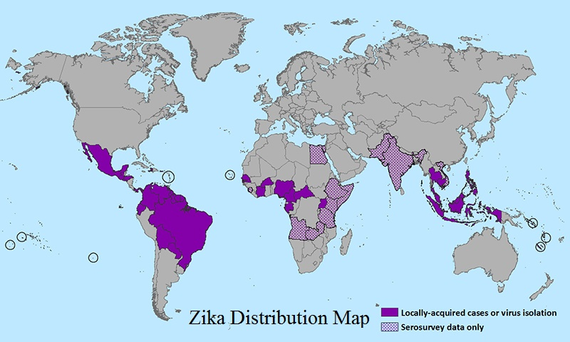

Monkeys are the primary hosts of Zika virus
 
Nov. 1980
The American Journal of Tropical Medicine and Hygiene
Aedes aegypti in a Texas coastal county as an index of dengue fever receptivity and control.
Abstract
Since Galveston County, Texas, is one of the high risk areas for the reintroduction of dengue, we have maintained an Aedes aegypti surveillance program since 1977 by using ovitraps to determine the density and distribution of this species in 17 communities. A. aegypti adults were present primarily from May through November... (emphasis added)
http://www.ncbi.nlm.nih.gov/pubmed/6160776
1986
Journal of the American Mosquito Control Association
The discovery and distribution of Aedes albopictus in Harris County, Texas.
On August 2, 1985, numerous adults and larvae of an unknown species of Aedes were collected from several widely separated tire dumps, in and around the city of Houston, Texas.
A survey of Harris County was begun on August 22 to determine the frequency, abundance and distribution of Ae. albopictus in water-filled containers, especially tires.
Surprisingly, Ae. albopictus was both the most abundant and frequently collected species. Aedes albopictus was
found in 125 (75.3%) of the used tires and in 17 (73.9%) of the
water-filled containers harboring mosquito larvae. Of the 2,950 larvae
identified during the survey, 1,564 (53%) were Ae. albopictus.
http://www.biodiversitylibrary.org/content/part/JAMCA/JAMCA_V02_N2_P217-219.pdf
1988
Journal of the American Mosquito Control Association
Aedes albopictus in the United States: rapid spread of a potential disease vector.
Abstract (part)
In 1986, Ae. albopictus was
found in many other Texas counties, and in Alabama, Arkansas, Florida,
Georgia, Illinois, Indiana, Louisiana, Mississippi, Missouri, Ohio, and
Tennessee. In 1987, infestations were discovered in Delaware, Kentucky,
Maryland, and North Carolina. Aedes albopictus and other exotic species
were intercepted in shipments of used tires entering the United States
from Asia. All such tires must now be free of mosquitoes before
entering the country. Control over the movement and storage of tires, a
strong source reduction program, and intensive public education can
solve the albopictus problem.
http://archive.org/stream/cbarchive_102644_aedesalbopictusintheunitedstat1988/JAMCA_V04_N3_P356-361_djvu.txt
1998
Journal of Virology
Phylogeny of the genus Flavivirus.
Abstract
We
undertook a comprehensive phylogenetic study to establish the genetic
relationship among the viruses of the genus Flavivirus and to compare
the classification based on molecular phylogeny with the existing
serologic method. <snip>
Fig. 3 - Phylogenetic tree of the genus Flavivirus, using nucleotide sequence.
http://www.ncbi.nlm.nih.gov/pmc/articles/PMC109351/figure/F3/
Fig. 4 - Phylogenetic tree of the genus Flavivirus, using amino acid sequence.
http://www.ncbi.nlm.nih.gov/pmc/articles/PMC109351/figure/F4/
Vertical
length is arbitrary. Scale [at bottom of each figure] is percentage of
genetic (Fig. 3) or amino acid (Fig. 4) distance.
http://www.ncbi.nlm.nih.gov/pubmed/9420202
Feb. 02, 2001
CDC - Morbidity and Mortality Weekly Report (MMWR)
Underdiagnosis of Dengue --- Laredo, Texas, 1999
Dengue outbreaks have been reported in communities along the Mexico--U.S. border since 1980 (1);
however, during 1987--July 1999, no cases were reported from Laredo,
Texas (1999 population: 162,000). During January--July 1999,
approximately 300--325 dengue cases were reported from Nuevo Laredo,
Tamaulipas, Mexico (1999 population: 274,000), a city across the Rio
Grande from Laredo. To determine whether undiagnosed or unreported
dengue cases had occurred in Laredo, the Texas Department of Health
(TDH) reviewed medical records from five Laredo health facilities (the
two city hospitals and the three largest of five community clinics).
This report summarizes the findings of the review, which indicated that
during July 23--August 20, 1999, 50% of suspected case-patients had
undiagnosed dengue infection.
Medical
records were reviewed for all patients who presented to one of the five
facilities with fever, arthralgias, myalgias, rash, or headache during
July 23--August 20. Forty-nine
suspected dengue case-patients were identified from 494 records; 24
(49%) were located and interviewed. Of these, 22 (92%) agreed to
provide a serum sample. Nine case-patients reported a history of travel to Mexico within 2 weeks of illness onset; two had not been outside Texas.
Editorial Note:
An estimated two million crossings occur each month between Laredo and Nuevo Laredo, and Ae. aegypti is found in both cities. Movement of infected persons can introduce the virus into dengue-free areas.
Following
identification of dengue cases, the Laredo Health Department
implemented mosquito reduction activities (e.g., aggressive refuse and
tire disposal campaigns and insecticide fogging). Dengue alerts were
sent to health-care providers, and mosquito reduction and personal
protection information was distributed through health fairs and
schools. Information exchange increased substantially between health
officials from Laredo and Nuevo Laredo. Although no suspected cases
were reported before the alerts were issued, 161 suspected dengue cases
were reported during mid-August--December 1999; 18 cases tested
positive for dengue. No positive cases were reported from Laredo in
2000.
http://www.cdc.gov/mmwr/preview/mmwrhtml/mm5004a2.htm
Aug. 10, 2007
CDC - Morbidity and Mortality Weekly Report (MMWR)
Dengue Hemorrhagic Fever --- U.S.-Mexico Border, 2005
Dengue
fever is a mosquito-transmitted disease caused by any of four closely
related virus serotypes (DEN-1, DEN-2, DEN-3, and DEN-4) of the genus Flavivirus.
Infection with one of these serotypes provides lifelong immunity to the
infecting serotype only. Therefore, persons can acquire a second dengue
infection from a different serotype, and second infections place them
at greater risk for dengue hemorrhagic fever (DHF), the more severe
form of the disease (1).
DHF is characterized by bleeding manifestations, thrombocytopenia,* and
increased vascular permeability that can lead to life-threatening shock
(2).
In south Texas, near the border with Mexico, sporadic, locally acquired
outbreaks of dengue fever have been reported previously; however, on
the Texas side of the border, these outbreaks have not included
recognized cases of locally acquired DHF in persons native to the area.
In July 2005, a case of DHF was reported in a resident of Brownsville,
Texas (Figure 1).
In August 2005, health authorities in the neighboring state of
Tamaulipas, Mexico, reported an ongoing dengue outbreak with 1,251
cases of dengue fever, including 223 cases (17.8%) of DHF.
Autochthonous DHF Case Report
On
June 24, 2005, a woman from Brownsville, Texas, had acute onset of
fever, chills, headache, nausea, vomiting, abdominal pain, arthralgia,
and myalgia. As a youth, the patient had resided across the border in
the city of Matamoros in Tamaulipas, Mexico; however, she had been a
Brownsville resident for 16 years with the exception of 1 year in
Houston, Texas. After she became ill, the woman crossed the border into
Matamoros for the first time in approximately 2 months, where she
visited a clinician and was given antibiotics. On June 28, the woman
was hospitalized in Matamoros with a diagnosis of probable dengue fever
and urinary tract infection. During her 3-day hospitalization in
Mexico, she had thrombocytopenia (62,000 platelets/mm3) but no hemorrhagic manifestations; she was treated with fluids and antibiotics and discharged.
On
July 1, the woman reentered the United States and sought treatment for
continued fever, chills, vomiting, and abdominal pain. She was admitted
to a hospital in Brownsville, Texas, where her blood pressure was 94/70
mm Hg, and laboratory testing indicated proteinuria, hematuria, and a
further decrease in platelet count (43,000/mm3). She was
given antibiotics for suspected partially treated urinary tract
infection and fluids for dehydration. During her hospital stay, the
patient's platelet count dropped to 39,000/mm3 and
albumin to 2.9 g/100 mL; a fecal occult blood test was positive, and
pleural effusion was noted on ultrasound. Upon discharge on July 4, her
platelet count had increased to 118,000/mm3. The woman was
discharged with a diagnosis of possible murine typhus or viral
infection and instructions to take a course of doxycycline.
Although the woman's clinical characteristics (i.e., acute fever, platelet count <100,000/mm3,
evidence of bleeding [hematuria and fecal occult blood] and plasma
leakage) were consistent with World Health Organization (WHO) criteria
for DHF (Box) (2),
dengue was not diagnosed at the Brownsville hospital. Subsequently,
results from a July 3 serum sample from the woman obtained by the
regional Texas Border Infectious Disease Surveillance (BIDS) project
tested positive for dengue immunoglobulin M (IgM) by enzyme-linked
immunosorbent assay (ELISA) and had an elevated titer of immunoglobulin
G (IgG) antibodies to dengue fever (1:655,350); this was interpreted as
indicative of a secondary dengue infection (1).
Outbreak Investigation and Response
Dengue fever case finding. On
August 27, 2005, Tamaulipas State Health Services reported to TDSHS
that an outbreak of dengue fever in the border state had grown to 1,251
cases that met the Mexico case definition (i.e., fever and at least two
of the following symptoms: headache, myalgia, arthralgia, and rash).
Using WHO criteria for DHF, Tamaulipas health authorities had
classified 223 (17.8%) of the cases as DHF, an increase in the
percentage classified as DHF from 2000--2004, when 541 dengue fever
cases were reported, including 20 cases (3.7%) classified as DHF.†
In
October, investigators in Texas and Tamaulipas began conducting
expanded outbreak case finding, including active surveillance in local
hospitals, with laboratory testing encouraged for patients with
undifferentiated fever as part of the BIDS project. In Cameron County,
Texas, where Brownsville is the county seat, TDSHS identified 24
additional cases of laboratory-confirmed dengue fever§,
including two additional cases of locally transmitted dengue fever and
22 cases associated with travel to Mexico; the cases had been reported
during August--November (Figure 2).
The serotype most commonly associated with the outbreak was identified
as DEN-2 (i.e., 27 of 28 viral isolates in Tamaulipas).
DHF case finding. In
December, investigators reviewed medical records of 129 patients who
had been hospitalized and reported to public health authorities with
both clinical and laboratory evidence of dengue fever, including 25
persons treated at three Cameron County hospitals and 104 treated at
three hospitals in Matamoros. Fifty-nine percent of the patients were
female. Ages ranged from 30 to 76 years (median 47.5 years) among the
Cameron County cases and from 7 to 70 years (median 36.0 years) among
the Matamoros cases. In addition to fever, 82% had myalgia, 78%
headache, 41% abdominal pain, 23% rash, and 19% had underlying chronic
diseases. No fatalities were recorded. A
total of 16 (64.0%) of the 25 dengue cases from Cameron County and 34
(32.7%) of the 104 cases from Matamoros met WHO criteria for DHF (Box). Eleven
of the 50 DHF cases, including one from Cameron County, were classified
as WHO grade III, or dengue shock syndrome, with early or mild evidence
of hypotension or shock. The remaining 39 DHF cases were classified as
WHO grade II.¶
Serosurveys. Because
many dengue infections are asymptomatic, and most ill persons likely do
not seek medical attention, investigators conducted serosurveys to
assess the incidence of dengue infection in the populations of
Matamoros and Brownsville. Serosurveys also enable estimation of the
population susceptible to second dengue infections and DHF
In
Matamoros, 240 households were visited during December 5--10, and 143
(59.6%) had residents at home. Blood samples were obtained from 131
persons in 111 homes. Of these samples, 30 were anti-dengue IgM
positive (weighted prevalence: 22.8%; 95% confidence interval [CI] =
13.3%--32.3%), and 101 were IgG positive (weighted prevalence: 76.6%;
CI = 64.7%--88.5%). In Brownsville, 346 households were visited during
December 12--15, and 161 (46.5%) had residents at home. Blood samples
were obtained from 141 persons in 118 homes. Of these samples, four
were anti-dengue IgM positive (weighted prevalence: 2.5%; CI =
0%--5.4%) and 47 were IgG positive (weighted prevalence: 38.2%; CI = 26.7%--49.8%). Of 24 Brownsville participants with no history of travel outside the United States, six (25%) were seropositive for IgM or IgG antibodies to dengue.
http://www.cdc.gov/mmwr/preview/mmwrhtml/mm5631a1.htm
June 11, 2009
The New England Journal of Medicine
Zika Virus Outbreak on Yap Island, Federated States of Micronesia
BACKGROUND
In 2007, physicians on Yap Island reported an outbreak of illness
characterized by rash, conjunctivitis, and arthralgia. Although serum
from some patients had IgM antibody against dengue virus, the illness
seemed clinically distinct from previously detected dengue. Subsequent
testing with the use of consensus primers detected Zika virus RNA in
the serum of the patients but no dengue virus or other arboviral RNA.
No previous outbreaks and only 14 cases of Zika virus disease have been
previously documented.
RESULTS
We identified 49 confirmed and 59 probable cases of Zika virus disease.
The patients resided in 9 of the 10 municipalities on Yap. Rash, fever,
arthralgia, and conjunctivitis were common symptoms. No
hospitalizations, hemorrhagic manifestations, or deaths due to Zika
virus were reported. We estimated that 73% (95% confidence interval, 68
to 77) of Yap residents 3 years of age or older had been recently
infected with Zika virus. Aedes hensilli was the predominant
mosquito species identified.
http://www.nejm.org/doi/full/10.1056/NEJMoa0805715
Sept. 2009
Emerging Infectious Diseases
Zika Virus Outside Africa
Abstract
Zika
virus (ZIKV) is a flavivirus related to yellow fever, dengue, West
Nile, and Japanese encephalitis viruses. In 2007 ZIKV caused an
outbreak of relatively mild disease characterized by rash, arthralgia,
and conjunctivitis on Yap Island in the southwestern Pacific Ocean.
This was the first time that ZIKV was detected outside of Africa and
Asia. The history, transmission dynamics, virology, and clinical
manifestations of ZIKV disease are discussed, along with the
possibility for diagnostic confusion between ZIKV illness and
dengue.The emergence of ZIKV outside of its previously known geographic
range should prompt awareness of the potential for ZIKV to spread to
other Pacific islands and the Americas.
In
April 2007, an outbreak of illness characterized by rash, arthralgia,
and conjunctivitis was reported on Yap Island in the Federated States
of Micronesia. Serum samples from patients in the acute phase of
illness contained RNA of Zika virus (ZIKV), a flavivirus in the same
family as yellow fever, dengue, West Nile, and Japanese encephalitis
viruses. These findings show that ZIKV has spread outside its usual
geographic range (1,2).
Sixty
years earlier, on April 18, 1947, fever developed in a rhesus monkey
that had been placed in a cage on a tree platform in the Zika Forest of
Uganda (3).
The monkey, Rhesus 766, was a sentinel animal in the Rockefeller
Foundation’s program for research on jungle yellow fever. Two days
later, Rhesus 766, still febrile, was brought to the Foundation’s
laboratory at Entebbe and its serum was inoculated into mice. After 10
days all mice that were inoculated intracerebrally were sick, and a
filterable transmissible agent, later named Zika virus, was isolated
from the mouse brains. In early 1948, ZIKV was also isolated from Aedes africanus mosquitoes trapped in the same forest (4). Serologic studies indicated that humans could also be infected (5). Transmission of ZIKV by artificially fed Ae. aegypti mosquitoes to mice and a monkey in a laboratory was reported in 1956 (6).
ZIKV
was isolated from humans in Nigeria during studies conducted in 1968
and during 1971–1975; in 1 study, 40% of the persons tested had
neutralizing antibody to ZIKV (7–9).
Human isolates were obtained from febrile children 10 months, 2 years
(2 cases), and 3 years of age, all without other clinical details
described, and from a 10 year-old boy with fever, headache, and body
pains (7,8).
From 1951 through 1981, serologic evidence of human ZIKV infection was
reported from other African countries such as Uganda, Tanzania, Egypt,
Central African Republic, Sierra Leone (10), and Gabon, and in parts of Asia including India, Malaysia, the Philippines, Thailand, Vietnam, and Indonesia (10–14). In additional investigations, the virus was isolated from Ae. aegypti mosquitoes in Malaysia, a human in Senegal, and mosquitoes in Côte d’Ivoire (15–17). In 1981 Olson et al. reported 7 people with serologic evidence of ZIKV illness in Indonesia (11).
A subsequent serologic study indicated that 9/71 (13%) human volunteers
in Lombok, Indonesia, had neutralizing antibody to ZIKV (18). The outbreak on Yap Island in 2007 shows that ZIKV illness has been detected outside of Africa and Asia ().
https://www.ncbi.nlm.nih.gov/pmc/articles/PMC2819875/
Oct. 24, 2009
Antiviral Research
Present and Future Arboviral Threats
B. Zika virus (ZIKAV)
ZIKAV, also a flavivirus (Flaviviridae: Flavivirus)
closely related to YFV, was first isolated from a sentinel monkey in
the Zika forest of Uganda in 1947; a year later virus was isolated from Ae. africanus at the same location (Dick et al., 1952).
Since that time, ZIKAV has been sporadically isolated, occasionally
associated with human disease, and serologic evidence of circulation
has been found in Africa (Uganda, Nigeria, Senegal, Egypt) and Asia
(India, Malaysia, Thailand, Viet Nam, the Philippines and
Indonesia)[reviewed in (Lanciotti et al., 2008)].
However, until recently, ZIKAV has never been associated with large
outbreaks of disease. Human seroprevalence can be quite high; for
example, 75% of 358 Malaysian residents had neutralizing antibodies in
1954, with an age and seroprevalence correlation suggesting endemicity (Pond, 1963). A Nigerian community exhibited 56% seroprevalence in 1980 (Adekolu-John and Fagbami, 1983).
In Africa, ZIKAV has been isolated from Ae. africanus (Dick et al., 1952; Haddow et al., 1964) and Ae. luteocephalus, (Lee, 1969) and in Malaysia from Ae. aegypti (Marchette et al., 1969);
the same vectors involved in enzootic and epidemic YFV and CHIKV
transmission, respectively. Like many other sympatric arboviruses,
ZIKAV produces a flu-like illness associated with high fever, malaise,
dizziness, anorexia, retro-orbital pain, edema, lymphadenopathy, and
gastrointestinal manifestations (Olson et al., 1981). A rash is also sometimes reported (Simpson, 1964). Thus, diagnosis requires serology or virus isolation, and most cases probably are assumed to be DEN or malaria.
In
2007, an epidemic including 49 confirmed and 59 probable cases of Zika
virus infection was detected on the Pacific Island of Yap (Duffy et al., 2009).
Rash, fever, arthralgia, and conjunctivitis were common signs and
symptoms, with an estimated 73% attack rate among residents ≥3 years of
age, or ca. 5,005 of the 6,892 residents in this age group. Aedes hensilli was
the most commonly collected mosquito species, although ZIKAV was not
isolated from this species and confirmation its vector status was not
achieved. ZIKAV was likely imported into Yap via a viremic traveler, a
hypothesis that was supported by the return of an infected health care
worker to the U.S. in July, 2007, most probably in a viremic state (Duffy et al., 2009).
Conclusions
Furthermore,
there is reason to believe that additional viruses such as VEEV, ZIKAV
and MAYV have the potential for urbanization (),
which could have devastating public health consequences, especially in
the Western Hemisphere, where there is no herd immunity.
http://www.ncbi.nlm.nih.gov/pmc/articles/PMC2815176/
March 2010
Acta Tropica
Seroprevalence and risk factors for dengue infection in socio-economically distinct areas of Recife, Brazil.
Brazil currently accounts for the majority of dengue cases reported in
the Americas, with co-circulation of DENV 1-3. Striking variation in
the epidemiological pattern of infection within cities has been
observed. Therefore, investigation of dengue transmission in small
areas is important to formulate control strategies. A population-based
household survey was performed in three diverse socio-economic and
environmental areas of Recife, a large urban center of Brazil, between
2005 and 2006. [...] The
dengue seroprevalence was 91.1%, 87.4% 74.3%, respectively, in the
deprived, intermediate and high socio-economic areas, inversely related
to their socio-economic status. In the deprived area, 59% of children
had already been exposed to dengue virus by the age of 5 years and the
estimated force of infection was three times higher than that in the
privileged area. The risk of infection increased with age in the three
areas. Not commuting away from the area was a risk factor for
seropositivity in the deprived area (OR=2.26; 95% CI: 1.18-4.30).
Number of persons per room was a risk factor for seropositivity in the
intermediate (OR=3.00; 95% CI: 3.21-7.37) and privileged areas
(OR=1.81; 95% CI: 1.07-3.04). Living in a house, as opposed to an
apartment, was a risk factor for seropositivity in the privileged area
(OR=3.62; 95% CI: 2.43-5.41). The main difference between the
privileged and other areas could be attributed to the much larger
proportion of apartment dwellers.
http://www.ncbi.nlm.nih.gov/m/pubmed/19896921/
April 2, 2010
Surveillance Summaries
Surveillance for Human West Nile Virus Disease --- United States, 1999--2008
FIGURE 1. Year of first reported human West Nile virus disease case, by state --- United States,* 1999--2008
![Figure 1 is a U.S. map showing the year of the first reported human West Nile virus disease case, by state and year. In 1999, New York had the first reported case, followed by Connecticut and New Jersey in 2000. In 2001, the first case was reported from Alabama, Florida, Georgia, Louisiana, Maryland, Massachusetts, and Pennsylvania. Twenty-seven states and the District of Columbia, reported the first case in 2002 (Arkansas, Delaware, Illinois, Indiana, Iowa, Kansas, Kentucky, Michigan, Minnesota, Missouri, Mississippi, Montana, North Carolina, North Dakota, Nebraska, Ohio, Oklahoma, Rhode Island, South Carolina, South Dakota, Tennessee, Texas, Vermont, Virginia, West Virginia, Wisconsin, and Wyoming), followed by eight states in 2003 (Arizona, California, Colorado, Idaho, Nevada, New Hampshire, New Mexico, and Utah), Washington in 2004, and Oregon in 2006.](http://www.cdc.gov/mmwr/preview/mmwrhtml/figures/s5902a1f1.gif)
FIGURE 2. West Nile virus disease cases (N = 28,961), by week of illness onset --- United States, 1999--2008

FIGURE 3. West Nile virus neuroinvasive disease case-fatality ratios, by age group --- United States, 1999--2008

http://www.cdc.gov/mmwr/preview/mmwrhtml/ss5902a1.htm
April 6, 2011
Science
Sex After a Field Trip Yields Scientific First
A
U.S. vector biologist appears to have accidentally written virological
history simply by having sex with his wife after returning from a field
trip to Senegal. A study just released in Emerging Infectious Diseases suggests
that the researcher, Brian Foy of Colorado State University in Fort
Collins, passed to his wife the Zika virus, an obscure pathogen that
causes joint pains and extreme fatigue. If so, it would be the first documented case of sexual transmission of an insect-borne disease.
Foy is the first author of the paper, which describes three anonymous patients. But in an interview with Science,
he confirmed that he is the anonymous "patient 1"; his Ph.D. student
Kevin Kobylinski, who accompanied him on the trip to Senegal and also
got sick, is "patient 2." Foy's wife, Joy Chilson Foy, a nurse at the
Poudre Valley Hospital in Fort Collins, is "patient 3"; she is also a
co-author of the paper.
Exactly what happened when Foy
and Kobylinski returned from Senegal on 24 August 2008 has remained a
mystery for years. As part of their research on malaria, the scientists
had been collecting mosquitoes in a southeastern village called
Bandafassi, where they were often bitten. About 5 days after their
return, both researchers got sick. Both had a rash on their torso,
extreme fatigue, headaches, and swollen and painful wrists, knees, and
ankles. Foy also had symptoms of prostatitis, including painful
urination, and he and his wife noticed what looked like blood in his
semen, according to the paper.
On 3 September, Foy's
wife's fell ill as well, with malaise, chills, extreme headache,
hypersensitivity to light, and muscle pains. The couple's four children
remained healthy. The symptoms started receding within about a week in
all three patients, although the joint pains lingered.
The
scientists suspected they were infected through one of their many
mosquito bites but were stumped as to the pathogen. So were several
laboratories, including the U.S. Centers for Disease Control and
Prevention (CDC), whose lab for insect-borne diseases is in Fort
Collins. Antibody tests on serum samples from the two scientists tested
positive for dengue, a viral disease that might have explained the
symptoms, but samples from Chilson Foy came back negative. "Eventually,
the CDC said, 'We think you had dengue, but we don't know what your
wife had,' " says Foy, who decided to keep samples from all three in
the freezer.
The mystery might never have been solved if Kobylinski hadn't gone out for a few beers with Andrew Haddow, a medical entomologist at the University of Texas Medical Branch (UTMB) at Galveston,
during another trip to Senegal more than a year later. Haddow, who
studies how pathogens survive in the jungle and emerge when humans
encroach, had a great personal interest in Zika:
His grandfather, Alexander Haddow, was one of three scientists who had
isolated the virus from a rhesus monkey in the Zika Forest near
Entebbe, Uganda, in 1947 and described it in a paper in 1952. "I read all of my grandfather's papers, so that stuff really interests me," Haddow says.
Zika,
he speculated, might account for the trio's symptoms—even though "it
was just a hunch." After Kobylinski returned home in December 2009 and
told Foy about the encounter, they decided to send the samples to
Haddow, who asked his UTMB colleague Robert Tesh, a veteran virologist,
to run a battery of tests, including one for the Zika virus. Sure
enough, all three samples had antibodies to the virus. "Then it all
fell into place," Foy says. The dengue antibodies were a red herring,
he says: both researchers had been vaccinated for the yellow fever
virus, which is closely related to dengue; antibodies against these
viruses often cross-react.
There is no direct evidence
that Foy's wife was infected through sexual contact, but the
circumstantial evidence is strong. It's very unlikely that she was
infected by a bite by a mosquito that first bit her husband; the three
tropical Aedes mosquito
species known to transmit Zika don't live in northern Colorado, and
moreover, the virus has to complete a 2-week life cycle within the
insect before it can infect the next human; Foy's wife fell ill just 9
days after his return.
Probable Non–Vector-borne Transmission of Zika Virus, Colorado, USA
Brian D. Foy

,
Kevin C. Kobylinski, Joy L. Chilson Foy, Bradley J. Blitvich, Amelia
Travassos da Rosa, Andrew D. Haddow, Robert S. Lanciotti, and Robert B.
Tesh
Author affiliations: Author affiliations: Colorado State University, Fort Collins, Colorado, USA (B.D. Foy, K.C. Kobylinski); Poudre Valley Hospital, Fort Collins (J.L.C. Foy); Iowa State University, Ames, Iowa, USA (B.J. Blitvich); University of Texas Medical Branch, Galveston, Texas, USA (A. Travassos da Rosa, A.D. Haddow, R.B. Tesh); Centers for Disease Control and Prevention, Fort Collins (R.S. Lanciotti)
Suggested citation for this article
Abstract
Clinical
and serologic evidence indicate that 2 American scientists contracted
Zika virus infections while working in Senegal in 2008. One of the
scientists transmitted this arbovirus to his wife after his return
home. Direct contact is implicated as the transmission route, most
likely as a sexually transmitted infection.
Feb. 28, 2012
PLoS Neglected Tropical Diseases
Genetic Characterization of Zika Virus Strains: Geographic Expansion of the Asian Lineage
Andrew D. Haddow,1,* Amy J. Schuh,1 Chadwick Y. Yasuda,2 Matthew R. Kasper,2,¤ Vireak Heang,2 Rekol Huy,3 Hilda Guzman,1 Robert B. Tesh,1 and Scott C. Weaver1
1Institute
for Human Infections and Immunity, Center for Tropical Diseases,
Department of Pathology, University of Texas Medical Branch, Galveston,
Texas, United States of America
Because ZIKV infection in humans produces an illness clinically
similar to dengue fever and many other tropical infectious diseases, it
is likely greatly misdiagnosed and underreported.
Author Summary
Our results indicate that there are two geographically distinct lineages of ZIKV (African and Asian).
Introduction
Although
it is thought that enzootic ZIKV is maintained primarily in a
monkey/mosquito transmission cycle, antibodies have been detected in
numerous other animal species including water buffalo, elephants,
goats, hippos, impala, kongoni, lions, sheep, rodents, wildebeest, and
zebras.
Clinical DENV and CHIKV infections are familiar to local clinicians and
most diagnostic laboratories can detect them. In contrast, few
physicians are aware of ZIKV and few laboratories test for clinical
infection. Consequently, most ZIKV infections are probably missed or
incorrectly diagnosed, as suggested by the high prevalence of ZIKV
antibodies found in serosurveys of human populations in Africa and Asia.
Results
The
most recent common ancestor of MR 766 (Uganda, 1947) diverged first,
followed by the divergence of the most recent common ancestor of the
ArD 41519 (Senegal, 1984) and IbH 30656 (Nigeria, 1968) strains, the
P6-740 strain (Malaysia, 1966), and lastly the EC Yap (Micronesia,
2007) and FS13025 (Cambodia, 2010) strains.
Zika virus nucleotide and amino acid alignments.

Neighbor-joining phylogeny generated from open reading frame nucleotide sequences of Zika virus strains. Numbers
at the nodes represent percent bootstrap support values based on 1,000
replicates. Isolates are represented according to strain name, country
of origin, and year of isolation. The lineage of each virus is
indicated to the right of the tree.
Based
on nucleotide and amino acid sequence composition, the African strains
were the most divergent from the Asian strains, and strains from the
same geographic regions were the least divergent (Africa and Asia)
Discussion
The
clinical similarity of ZIKV infection to classical DEN fever and CHIK
fever may be one reason why this disease has rarely been reported in
Asia. During World War II, for example, DEN fever was a major medical
problem among Allied and Japanese troops in Southeast Asia and the
South Pacific [23].
At that time, there were no specific laboratory tests that could
differentiate between the three diseases. In fact, CHIKV and ZIKV still
had not been isolated. Consequently, cases of acute febrile illness
were likely diagnosed clinically as DEN or possibly as scrub typhus or
malaria, diseases that were known and frequently diagnosed among the
many foreign military and civilian personnel present in the region at
that time.
http://www.ncbi.nlm.nih.gov/pmc/articles/PMC3289602/#pntd.0001477
2012
Texas Department of State Health Services
Dengue Fever & Dengue Hemorrhagic Fever (DHF)
154 Total Dengue Cases Reported in Texas by County, 2003-2012*
*All cases were “imported”, with the exception of 4 cases from Cameron County in 2005 and 1 case from Hidalgo in 2008.
https://www.dshs.state.tx.us/idcu/disease/Dengue/data/
Dec. 21, 2012
Slate
Dengue, aka “Breakbone Fever,” Is Back
Overview of historical and present day Dengue virus in the US and elsewhere.
http://www.slate.com/articles/health_and_science/pandemics/2012/12/dengue_fever_in_united_states_breakbone_fever_outbreaks_florida_texas_and.single.html
May 1, 2013
Journal of Medical Entomology
Aedes (Stegomyia) aegypti in the Continental United States: A Vector at the Cool Margin of Its Geographic Range

Counties in the continental United States with collection records of Ae. aegypti from
1986 to 2010 (shaded red), based on information from a database for
invasive mosquito species curated by C. G. Moore of Colorado State
University. This database includes data from the Centers for Disease
Control and Prevention ArboNet initiative, as well as reports from
state and local public health and vector control programs, university
researchers, and others.
http://jme.oxfordjournals.org/content/50/3/467
Aug. 1, 2013
PLoS Neglected Tropical Diseases
Aedes (Stegomyia) albopictus (Skuse): a potential vector of Zika virus in Singapore.
METHODOLOGY/PRINCIPAL FINDINGS:
To determine the competence of Ae. albopictus
to ZIKV, we orally infected local mosquito strains to a Ugandan strain
virus. Fully engorged mosquitoes were maintained in an environmental
chamber set at 29°C and 80-85%RH. Twelve mosquitoes were then sampled
daily from day one to seven and on day 10 and 14 post infection (pi).
Zika virus titre in the midgut and salivary glands of each mosquito
were determined using tissue culture infectious dose50 assay, while
transmissibility of the virus was determined by detecting viral antigen
in the mosquito saliva by qRT-PCR. High dissemination and transmission
rate of ZIKV were observed. By day 7-pi, all mosquitoes have
disseminated infection and 73% of these mosquitoes have ZIKV in their
saliva. By day 10-pi, all mosquitoes were potentially infectious.
http://www.ncbi.nlm.nih.gov/pubmed/23936579
Oct. 9, 2013
Vector-Borne and Zoonotic Diseases
Identification of Dengue Fever Cases in Houston, Texas, with Evidence of Autochthonous Transmission Between 2003 and 2005
Abstract:
Houston, Texas, maintains an environment conducive to dengue virus
(DENV) emergence; however, surveillance is passive and diagnostic
testing is not readily available. To determine if DENV is present in
the area, we tested 3768 clinical specimens (2138 cerebrospinal fluid
[CSF] and 1630 serum) collected from patients with suspected
mosquito-borne viral disease between 2003 and 2005. We identified 47
immunoglobulin M (IgM)-positive dengue cases, including two cases that
were positive for viral RNA in serum for dengue serotype 2. The
majority of cases did not report any history of travel outside the
Houston area prior to symptom onset. The epidemic curve suggests an
outbreak occurred in 2003 with continued low-level transmission in 2004
and 2005. Chart abstractions were completed for 42 of the 47 cases; 57%
were diagnosed with meningitis and/or encephalitis, and 43% met the
case definition for dengue fever. Two of the 47 cases were fatal,
including one with illness compatible with dengue shock syndrome. Our
results support local transmission of DENV during the study period.
These findings heighten the need for dengue surveillance in the
southern United States.
http://online.liebertpub.com/doi/abs/10.1089%2Fvbz.2013.1413
Oct. 18, 2013
HEALTH NEWS FROM NPR
Dengue fever is in Houston. And it turns out the mosquito-borne illness isn't exactly a stranger there.
"There was dengue circulating, and we had no idea that it was here
because we just weren't looking," says the study's lead author Dr.
Kristy Murray of the Baylor College of Medicine and Texas Children's
Hospital.
The latest study shows dengue hasn't been pushed completely to the sidelines.
About 20 percent of people infected with dengue don't show any
symptoms. The other 80 percent can experience high fever, severe
headaches, rashes and vomiting.
In the current study, Murray and her colleagues looked at samples of
blood serum and spinal fluid collected between 2003 to 2005 from people
with serious illnesses most likely brought on by infections.
Among 3,768 samples, the researchers found 47 that were positive for
dengue fever. While that may not sound like very many, the samples came
from the sickest people, which could mean there was an undercount of
the fuller disease picture.
http://www.npr.org/sections/health-shots/2013/10/16/235628882/houston-we-have-dengue-fever
Oct. 22, 2013
Virology Journal
Quantitative real-time PCR detection of Zika virus and evaluation with field-caught Mosquitoes
Zika virus (ZIKV) is an arbovirus (Flaviviridae family genus flavivirus[1] transmitted by mosquitoes. Its natural transmission cycle in Africa involves primarily Aedes species including Ae. furcifer, Ae. taylori andAe. luteocephalus and Cercopithecus aethiops, Erythrocebus patas monkeys [2] while it is also transmitted by domestic mosquitoes Aedes (Ae.) aegypti, Ae. hensilli[3]. The survival of ZIKV in interepizootics is believed to depend on vertical transmission of the virus in Aedes[4].
http://www.ncbi.nlm.nih.gov/pmc/articles/PMC4016539/
Nov. 18, 2013
Scientific American
Dengue Fever Reemerges in Texas
Late last week Texas public health officials confirmed a new wave of
dengue fever has cropped up in the southernmost tip of Texas, marking
the first outbreak the state has seen since 2005.
Texas public health officials announced that the same area that saw an
outbreak almost a decade ago now has 18 confirmed cases of the disease.
Seven are believed to have been locally acquired (rather than
contracted when traveling to a dengue-endemic region), according to the
Texas Department of State Health Services (DSHS). The dengue outbreak
in southern Texass Cameron County and neighboring Hidalgo County comes
after there had been an uptick in cases directly across the TexasMexico
border in Tamaulipas over the last couple of months.
We've seen in Cameron County over the last several weeks more dengue
cases than we would expect, says Chris Van Deusen, a spokesman for
DSHS. In the last decade Cameron County has seen 27 cases, so 14
occurrences there over the past few weeks is significantly higher than
normal.
Until recently only three dengue outbreaks had taken hold in the U.S.
during the 21st century. Outbreaks occurred in Hawaii (2001);
Brownsville, Texas, (2005); and southern Florida, beginning in 2009.
http://blogs.scientificamerican.com/observations/dengue-fever-reemerges-in-texas/
Dec. 2013
Rapid communications
Zika virus infection complicated by Guillain-Barré
syndrome – case report, French Polynesia,
December 2013
Zika fever, considered as an emerging disease of arboviral
origin, because of its expanding geographic area,
is known as a benign infection usually presenting as
an influenza-like illness with cutaneous rash. So far,
Zika virus infection has never led to hospitalisation.
We describe the first case of Guillain–Barré syndrome
(GBS) occurring immediately after a Zika virus infection, during the current Zika and type 1 and 3 dengue
fever co-epidemics in French Polynesia.
http://www.eurosurveillance.org/images/dynamic/EE/V19N09/art20720.pdf
Feb. 06, 2014
PLoS Neglected Tropical Diseases
Zika Virus in Gabon (Central Africa) – 2007: A New Threat from Aedes albopictus?
Background
Chikungunya
and dengue viruses emerged in Gabon in 2007, with large outbreaks
primarily affecting the capital Libreville and several northern towns.
Both viruses subsequently spread to the south-east of the country, with
new outbreaks occurring in 2010. The mosquito species Aedes albopictus,
that was known as a secondary vector for both viruses, recently invaded
the country and was the primary vector involved in the Gabonese
outbreaks. We conducted a retrospective study of human sera and
mosquitoes collected in Gabon from 2007 to 2010, in order to identify
other circulating arboviruses.
Methodology/Principal Findings
Sample
collections, including 4312 sera from patients presenting with painful
febrile disease, and 4665 mosquitoes belonging to 9 species, split into
247 pools (including 137 pools of Aedes albopictus), were screened with molecular biology methods. Five human sera and two Aedes albopictus pools, all sampled in an urban setting during the 2007 outbreak, were positive for the flavivirus Zika (ZIKV). The ratio of Aedes albopictus pools
positive for ZIKV was similar to that positive for dengue virus during
the concomitant dengue outbreak suggesting similar mosquito infection
rates and, presumably, underlying a human ZIKV outbreak
Author Summary
Not
previously considered an important human arboviral pathogen, the
epidemic capacity of Zika virus (ZIKV, a dengue-related flavivirus) was
revealed by the Micronesia outbreak in 2007, which affected about 5000
persons. Widely distributed throughout tropical areas of Asia and
Africa, ZIKV is transmitted by a broad range of mosquito species, most
of which are sylvatic or rural, Aedes aegypti,
an anthropophilic and urban species, being considered the main ZIKV
epidemic vector. In a context of emerging arbovirus infections
(chikungunya (CHIKV) and dengue (DENV)) in Gabon since 2007, we
conducted a retrospective study to detect other, related viruses. In
samples collected during the concurrent CHIKV/DENV outbreaks that
occurred in the capital city in 2007, we detected ZIKV in both humans
and mosquitoes, and notably the Asian mosquito Aedes albopictus that
recently invaded the country and was the main vector responsible for
these outbreaks. We found that the Gabonese ZIKV strain belonged to the
African lineage, and phylogenetic analysis suggested ancestral
diversification and spread rather than recent introduction. These
findings, showing for the first time epidemic ZIKV activity in an urban
environment in Central Africa and the presence of ZIKV in the invasive
mosquito Aedes albopictus, raise the possibility of a new emerging threat to human health.
Introduction
ZIKV has also been isolated from mosquitoes collected in Senegal, Ivory Coast, Burkina Faso, Central African Republic and Uganda [1], [6], [8], [9]. These mosquitoes mainly belonged to sylvan or rural species of the genus Aedes, and more precisely to the Aedimorphus, Diceromyia and Stegomyia subgenera. The virus has also been isolated in West Africa (Burkina Faso, Senegal and Ivory Coast) [6],[9] and Asia [10] from Aedes aegypti, a species being considered the main ZIKV epidemic vector outside Africa [11]. Moreover, Ae. aegypti was shown experimentally to be an efficient ZIKV vector [12]–[14].
Clinical description
Clinical
information was available for only one ZIKV-positive patient, who had
mild arthralgia, subjective fever, headache, rash, mild asthenia,
myalgia, diarrhea and vomiting. No information was available on this
patient's outcome. Cycle threshold values for human blood samples were
high (>37 cycles), suggesting low viral loads (data not shown).
Vector involvement
Aedes albopictus was the predominant species collected, accounting for 55.4% of the mosquito pools, while Aedes aegypti accounted for 18.2% (Table 1). The other mosquito species consisted of members of the Aedes simpsoni complex, Anopheles gambiae, Mansonia africana, Mansonia uniformis, Culex quinquefasciatus, Eretmapodites quinquevittatus and unidentified Culex species. Positive mosquito pools were captured from two suburbs (Nzeng-Ayong and Alenkiri) where Aedes albopictus was the predominant species (Figure 1, Table 1).
Discussion
Evidence of human ZIKV infections in Central Africa is limited to one isolate from RCA in 1991[6] and two serological surveys performed 50 years ago in Gabon [25], [26].
No report of human ZIKV infections was made in other countries of the
Congo basin forest block, despite probable circulation through a sylvan
natural cycle. We provide here the first direct evidence of human ZIKV
infections in Gabon, as well as its occurrence in an urban transmission
cycle, and the probable role of Ae. albopictus as an epidemic vector.
Of
note, ZIKV transmission occurred here in a previously undocumented
urban cycle, supporting the potential for urbanization suggested in
2010 by Weaver and Reisen [27]. While some mosquito species (including Ae. aegypti) previously found to be associated with ZIKV, were captured and tested here, only Ae. albopictus pools were positive for this virus. Moreover, this species largely outnumbered Ae. aegypti in the suburbs of Libreville where human cases were detected, suggesting that Ae. albopictus played a major role in ZIKV transmission in Libreville.
The ratio of ZIKV-positive Ae. albopictus pools
is similar to that reported for DENV-positive pools, suggesting that
these two viruses infect similar proportions of mosquitoes. The small
number of recorded human ZIKV cases, by comparison with DENV cases, may
be due to the occurrence of subclinical forms of ZIKV infections that
did not required medical attention. Thus, an underlying ZIKV epidemic
transmission might have been masked by concomitant CHIKV/DENV outbreaks.
The
natural histories of CHIKV and ZIKV display several similarities.
Before the large Indian Ocean outbreaks in 2005–2007, chikungunya fever
was a neglected arboviral disease.
In Asia, both viruses are thought to circulate mainly in a human-mosquito cycle involving Ae. aegypti [11], [14], [31]. Together with the recent Yap Island outbreak, this prompted some researchers to re-examine the susceptibility of Ae. aegypti to ZIKV infection [14].
However, it must be noted that the vector of the Yap Island outbreak
was not definitely identified since the predominant potential vector
species Aedes hensilli remained negative [15], and that ZIKV has been isolated only once from Ae. aegypti in Asia [10], so that its vector status in natura is not confirmed.
Finally both CHIKV and ZIKV have shown their ability to adapt to a new vector, Ae. albopictus,
upon introduction in an environment where their primary vector was
outnumbered. This mosquito species being native to South-East Asia, our
findings may help to explain human ZIKV transmission in Asia.
Aedes albopictus was first introduced in Africa in 1991 [34] and detected in Gabon in 2007, where its invasion likely contributed to the emergence of CHIKV and DENV in this country[17]–[19], [35].
Multiple lines of evidence supporting its increasing impact as an
arboviral vector have also been obtained during CHIKV outbreaks in the
Indian Ocean region (2005–2007) and in Italy (2007) [36], [37] through viral evolutionary convergence of Ae. albopictus adaptive mutations [38]–[41]. Whether or not the transmission of ZIKV in Central Africa was also link to such an adaptative mutation of ZIKV to Ae. albopictus cannot be answered at this stage.
Why ZIKV has not yet been detected in the areas where DENV and CHIKV have already spread via Ae. albopictus is
unclear, but it may be an ongoing process which we are just starting to
detect. The spread of CHIKV reflects the ability of arboviruses to
adapt to alternative hosts, and the resulting public health concerns in
both developed and developing countries. Is ZIKV the next virus to
succeed CHIKV as an emerging global threat? The increasing geographic
range of Ae. albopictus in Africa, Europe, and the Americas [34], [36],[43], [44], together with the ongoing ZIKV outbreak in French Polynesia at the time of writing[45] suggest this possibility should be seriously considered.
http://www.ncbi.nlm.nih.gov/pmc/articles/PMC3916288/
April 03, 2014
Eurosurveillance
EVIDENCE OF PERINATAL TRANSMISSION OF ZIKA VIRUS, FRENCH POLYNESIA, DECEMBER 2013 AND FEBRUARY 2014
A
Zika virus (ZIKAV) outbreak started in October 2013 in French
Polynesia, South Pacific. We describe here the clinical and laboratory
features of two mothers and their newborns who had ZIKAV infection as
confirmed by ZIKAV RT-PCR performed on serum collected within four days
post-delivery in date. The infants’ infection most probably occurred by
transplacental transmission or during delivery. Attention should be
paid to ZIKAV-infected pregnant women and their newborns, as data on
the impact on them are limited.
Discussion
Perinatal
transmission of arbovirus has been reported for DENV [10-14],
chikungunya virus (CHIKV) [15,16], West Nile virus (WNV) [17,18] and
yellow fever virus (YFV) [19,20]. Breast milk transmission has been
reported for DENV [14] and WNV [18] and has been suspected for the
vaccine strain of YFV [20]. Severe consequences of arbovirus
materno–fetal transmission have been reported, notably for CHIKV
(encephalopathy and haemorrhagic fever) [16] and DENV (preterm
delivery, fetal death, low birth weight, fetal anomalies, prematurity
and acute fetal distress during labour) [10,12].
The
detection of ZIKAV RNA by PCR in breast milk samples in our study
raises the question of possible transmission by breastfeeding. The fact
that replicative ZIKAV was not found in breast milk samples makes
contamination by this route unlikely. The finding that RT-PCR on
Newborn 2’s serum was positive the day following the start of breast
feeding can reasonably exclude this route of contamination for this
infant. The ZIKV RNA load reported in the two breast milk samples (2.9
× 104 and 205 × 104 copies /mL) were higher than the DENV RNA load reported in a suspected case of DENV breast milk transmission (>0.01 × 104 and >0.1 × 104copies
/mL) in New Caledonia in 2012 [14]. Of interest, CHIKV RNA was not
detected from 20 milk samples collected from breastfeeding viraemic
mothers during an outbreak of CHIKV infection in Réunion Island in
2005–06 [16].
Conclusions
Given
the severe neonatal diseases reported with other arbovirus infections,
such as chikungunya [16] and dengue [10,12], we recommend close
monitoring of perinatal ZIKAV infections. Due to the high ZIKAV RNA
load detected in breast milk, and even though no replicative ZIKAV
particles were detected, ZIKAV transmission by breastfeeding must be
considered.
http://www.eurosurveillance.org/ViewArticle.aspx?ArticleId=20751
July 20, 2014
Slate
What Scares Bug Experts?
Overview of chikungunya and the Asian tiger mosquito (Aedes albopictus)
http://www.slate.com/articles/health_and_science/medical_examiner/2014/07/chikungunya_virus_in_the_united_states_cdc_and_other_experts_worried_about.html
Oct. 13, 2014
PLoS One
Zika virus emergence in mosquitoes in southeastern Senegal, 2011.
Abstract
BACKGROUND:
Zika virus (ZIKV; genus Flavivirus, family Flaviviridae) is maintained in a zoonotic cycle between arboreal Aedes spp.
mosquitoes and nonhuman primates in African and Asian forests.
Spillover into humans has been documented in both regions and the virus
is currently responsible for a large outbreak in French Polynesia. ZIKV
amplifications are frequent in southeastern Senegal but little is known
about their seasonal and spatial dynamics. The aim of this paper is to
describe the spatio-temporal patterns of the 2011 ZIKV amplification in
southeastern Senegal.
METHODOLOGY/FINDINGS:
Mosquitoes
were collected monthly from April to December 2011 except during July.
Each evening from 18:00 to 21:00 hrs landing collections were performed
by teams of 3 persons working simultaneously in forest (canopy and
ground), savannah, agriculture, village (indoor and outdoor) and barren
land cover sites. Mosquitoes were tested for virus infection by virus
isolation and RT-PCR.
ZIKV was detected in 31 of the 1,700 mosquito pools (11,247 mosquitoes) tested:
Ae. furcifer (5),
Ae. luteocephalus (5),
Ae. africanus (5),
Ae. vittatus (3),
Ae. taylori, Ae. dalzieli, Ae. hirsutus and Ae. metallicus (2 each) and
Ae. aegypti, Ae. unilinaetus, Ma. uniformis, Cx. perfuscus and An. coustani (1 pool each)
collected
in June (3), September (10), October (11), November (6) and December
(1). ZIKV was detected from mosquitoes collected in all land cover
classes except indoor locations within villages. The virus was detected
in only one of the ten villages investigated.
CONCLUSIONS/SIGNIFICANCE:
This
ZIKV amplification was widespread in the Kédougou area, involved
several mosquito species as probable vectors, and encompassed all
investigated land cover classes except indoor locations within villages. Aedes furcifer males and Aedes vittatus were
found infected within a village, thus these species are probably
involved in the transmission of Zika virus to humans in this
environment.
Table 1) http://www.ncbi.nlm.nih.gov/pmc/articles/PMC4195678/table/pone-0109442-t001/
Table 2) http://www.ncbi.nlm.nih.gov/pmc/articles/PMC4195678/table/pone-0109442-t002/
Table 3) http://www.ncbi.nlm.nih.gov/pmc/articles/PMC4195678/table/pone-0109442-t003/
Minimum infection rates
Overall infection rates among species differed significantly (χ2 = 82.1, df = 12, P<0.0001). Ae. furcifer, Ae. vittatus, Ae. taylori, Ae. luteocephalus, Ae. dalzieli, Ae. aegypti, Ma. uniformis and An. coustani had the lowest (compared to Ae. africanus, Ae. hirsutus, Ae. metallicus, Ae. unilineatus and Cx. perfuscus) and statistically comparable infection rates. (χ2 = 6.4, df = 7, P = 0.5).
Discussion
ZIKV was detected in some mosquitoes in June, corresponding to the beginning of the rainy season in southern Senegal [21], [34].
This suggests rapid seasonal amplification, possibly due to efficient
vertical transmission and/or maintenance in vertebrate reservoirs.
The detection of ZIKV in a pool of male Ae. furcifer suggests
strongly that it is vertically transmitted in this species, and
indicates that vertical transmission may be an important mechanism of
local maintenance [19], [21], [42], [44]. Despite the fact that no infected Ae. furcifer females
were collected within villages, the collection of the infected male
nevertheless suggests that this species participates in the
transmission of the ZIKV within villages.
http://www.ncbi.nlm.nih.gov/pmc/articles/PMC4195678/
http://journals.plos.org/plosone/article?id=10.1371/journal.pone.0109442
Oct. 14, 2014
Eurosurveillance
CONCURRENT
OUTBREAKS OF DENGUE, CHIKUNGUNYA AND ZIKA VIRUS INFECTIONS – AN
UNPRECEDENTED EPIDEMIC WAVE OF MOSQUITO-BORNE VIRUSES IN THE PACIFIC
2012–2014
Since
January 2012, the Pacific Region has experienced 28 new documented
outbreaks and circulation of dengue, chikungunya and Zika virus. These
mosquito-borne disease epidemics seem to become more frequent and
diverse, and it is likely that this is only the early stages of a wave
that will continue for several years. Improved surveillance and
response measures are needed to mitigate the already heavy burden on
island health systems and limit further spread to other parts of the
world.
http://www.eurosurveillance.org/ViewArticle.aspx?ArticleId=20929
CDCPotential Sexual Transmission of Zika Virus
Abstract
In
December 2013, during a Zika virus (ZIKV) outbreak in French Polynesia,
a patient in Tahiti sought treatment for hematospermia, and ZIKV was
isolated from his semen. ZIKV transmission by sexual intercourse has
been previously suspected. This observation supports the possibility
that ZIKV could be transmitted sexually.
March 2015
Journal of the American Mosquito Control Association
Updated Distribution of Aedes albopictus in Oklahoma, and Implications in Arbovirus Transmission
Abstract
A series of statewide surveys were conducted in Oklahoma in the summers between 1991 and 2004 to identify the distribution of Aedes albopictus. Adult mosquitoes were identified in 63 counties, bringing the currently known distribution of Ae. albopictus in the state to 69 of 77 counties. The widespread presence of Ae. albopictus in Oklahoma has important current and future public and veterinary health implications for surveillance and control efforts
http://www.bioone.org/doi/10.2987/14-6446R.1
May 2015
The Southeast Asian journal of tropical medicine and public health
Zika Virus Infection in Australia Following a Monkey Bite in Indonesia.
Abstract
A traveller returning to Australia developed Zika virus infection, with
fever, rash and conjunctivitis, with onset five days after a monkey
bite in Bali, Indonesia. Flavivirus RNA detected on PCR from a
nasopharyngeal swab was sequenced and identified as Zika virus.
Although mosquito-borne transmission is also possible, we propose the
bite as a plausible route of transmission.
http://search.proquest.com/openview/e228cde8665e7c4a0fef9753a9131cd4/1?pq-origsite=gscholar
June 09, 2015
Memórias do Instituto Oswaldo Cruz
First report of autochthonous transmission of Zika virus in Brazil
ABSTRACT
In
the early 2015, several cases of patients presenting symptoms of mild
fever, rash, conjunctivitis and arthralgia were reported in the
northeastern Brazil. Although all patients lived in a dengue endemic
area, molecular and serological diagnosis for dengue resulted negative.
Chikungunya virus infection was also discarded. Subsequently, Zika
virus (ZIKV) was detected by reverse transcription-polymerase chain
reaction from the sera of eight patients and the result was confirmed
by DNA sequencing. Phylogenetic analysis suggests that the ZIKV
identified belongs to the Asian clade. This is the first report of ZIKV
infection in Brazil.
Key words: Zika virus; "dengue-like syndrome"; Brazil
However, one plausible hypothesis is the arrival of the new emergent virus during the soccer World Cup in 2014.
http://www.scielo.br/scielo.php?pid=S0074-02762015000400569&script=sci_arttext
July 7, 2015
The global compendium of Aedes aegypti and Ae. albopictus occurrence
Abstract
Aedes aegypti and Ae. albopictus are the main vectors transmitting
dengue and chikungunya viruses. Despite being pathogens of global
public health importance, knowledge of their vectors' global
distribution remains patchy and sparse. A global geographic database of
known occurrences of Ae. aegypti and Ae. albopictus between 1960 and
2014 was compiled. Herein we present the database, which comprises
occurrence data linked to point or polygon locations, derived from
peer-reviewed literature and unpublished studies including national
entomological surveys and expert networks.
Figure 2- Map of occurrence points for Ae. aegypti.
http://www.ncbi.nlm.nih.gov/pmc/articles/PMC4493829/
Sept. 21, 2015
Washington Post
Bumpy rash, achy joints, inflamed eyes? There’s a new disease in town.
Never
heard of the Zika virus? That may change soon. Almost unknown in humans
until the past decade, Zika is now spreading fast through South America
and Oceania, and it may soon knock on our doors, too. Although it can
resemble a mild case of the flu, the disease can lead to some serious
neurological complications, including paralysis and difficulty
breathing. It’s also the first known mosquito-borne disease that can be
transmitted sexually among humans.

https://www.washingtonpost.com/national/health-science/bumpy-rash-achy-joints-inflamed-eyes-theres-a-new-disease-in-town/2015/09/21/417a89f4-3086-11e5-8353-1215475949f4_story.html
Oct. 8, 2015
SCIENTIFIC AMERICAN
Zika Disease: Another Reason to Hate Mosquitoes
Experts
are concerned that the illness, which is increasingly linked to a
disorder that causes paralysis, may become a problem in the U.S.
By
the time the 48-year-old man showed up at a clinic in New York City he
had been sick for almost two weeks. A blotchy, red rash still blanketed
his torso and his body ached. He had just gotten over a triple-digit
fever, intense lower back pain and a painful eye infection. Five weeks
earlier he had embarked on a long vacation to South America and
Polynesia but during his trip he had felt fine. He had hopscotched from
country to country until he capped his stint through French Polynesia
with a trip to Mooréa, an island about 16 kilometers northwest of
Tahiti. The South Pacific paradise was teeming with some hungry
mosquitos. But he wasn’t worried about the bites. He knew he was up on
all his travel vaccinations.
http://www.scientificamerican.com/article/zika-disease-another-reason-to-hate-mosquitoes/
Oct. 2015
Public Health Response to Aedes aegypti and Ae. albopictus Mosquitoes Invading California

Figure. Invasive Aedes mosquitoes
detected during 2011–2015 and number of imported human cases of dengue,
chikungunya fever, or both reported during 2014 in counties in
California, USA.
Nov. 12, 2015

On
November 09, 2015, the Caribbean Public Health Agency (CARPHA)
confirmed five (5) case of Zika virus in a territory of the Caribbean
Community. Earlier this year, suspected cases of the
mosquito-borne disease were reported in Brazil and the Dominican
Republic.
http://carpha.org/articles/ID/82/Zika-Virus-Reaches-the-Caribbean-Community
Nov. 24, 2015
RAPID RISK ASSESSMENT
Microcephaly in Brazil potentially linked to
the Zika virus epidemic
Between 7 October 2013 and 6 April 2014, 8 750 suspected cases of ZIKV infection were reported by the syndromic
surveillance sentinel network of French Polynesia, with 383 confirmed cases and an estimated 32 000 cases having
consulted a healthcare facility for the condition [32,33]. During the outbreak, 74 individuals presented with
neurological symptoms or auto-immune syndrome following a disease episode with symptoms consistent with ZIKV
infection in previous days [17,34-36]. Of these, 42 were confirmed as Guillain-Barré syndrome, with 37 cases having
presented with a previous viral syndrome. The causal link between ZIKV infection and Guillain-Barré syndrome is
still not established.
On 24 November 2015, the health authorities of French Polynesia reported an unusual increase of at least 17 cases
of central nervous system malformations in foetuses and infants during 2014–2015, coinciding with the Zika
outbreaks on the French Polynesian islands. These malformations consisted of 12 foetal cerebral malformations or
polymalformative syndromes, including brain lesions, and five infants reported with brainstem dysfunction and
absence of swallowing. None of the pregnant women described clinical signs of ZIKV infection, but the four tested
were found positive by IgG serology assays for flavivirus, suggesting a possible asymptomatic ZIKV infection.
Further serological investigations are ongoing. Based on the temporal correlation of these cases with the Zika
epidemic, the health authorities of French Polynesia hypothesise that ZIKV infection may be associated with these
abnormalities if mothers are infected during the first or second trimester of pregnancy.
The occurrence of microcephaly in association with ZIKV has not been documented in recent outbreaks in
Micronesia and New Caledonia. However, an increase of central nervous system malformations in foetuses and
newborns has been reported in French Polynesia following an epidemic of ZIKV infection. The size of the affected
populations (French Polynesia, 270 000 inhabitants; Yap island 11 241 and Pernambuco State, 8.8 million
inhabitants) and the number of births are much smaller in these places than in Brazil [52-54] and could make it
difficult to recognise an uncommon and previously unknown phenomenon, even if the outcome event is highly
identifiable.
http://ecdc.europa.eu/en/publications/Publications/zika-microcephaly-Brazil-rapid-risk-assessment-Nov-2015.pdf
Nov. 27, 2015
World Health Organization - Disease Outbreak News
Microcephaly – Brazil
The
Ministry of Health (MoH) of Brazil has provided PAHO/WHO with an update
regarding the unusual increase in the number of cases of microcephaly
among newborns in the northeast of Brazil.
As
of 21 November, a total of 739 cases of microcephaly were being
investigated in nine states in the northeast of Brazil. The
distribution of the cases was as follows: Pernambuco (487 cases),
Paraíba (96 cases), Sergipe (54 cases), Rio Grande do Norte (47 cases),
Piauí (27 cases), Alagoas (10 cases), Ceará (9 cases), Bahia (8 cases)
and Goiás (1 case). One fatal case was reported in the state of Rio
Grande do Norte.
http://who.int/csr/don/27-november-2015-microcephaly/en/
Nov. 30, 2015
Otempo
Governo federal anuncia plano de combate ao zika com 17 ministérios

http://www.otempo.com.br/capa/brasil/governo-federal-anuncia-plano-de-combate-ao-zika-com-17-minist%C3%A9rios-1.1182111
Nov. 30, 2015
Diario de Pernambuco
Zika vírus pode ser transmitido por relação sexual e aleitamento maternoSuspeita-se ainda de contágio por via sanguínea, como em transfusões de sangue e transplante de órgãos

http://www.diariodepernambuco.com.br/app/noticia/vida-urbana/2015/11/30/interna_vidaurbana,613372/zika-virus-pode-ser-transmitido-por-relacao-sexual-e-aleitamento-materno.shtml
Dec. 1, 2015
Pan American Health Organization / World Health Organization
Epidemiological Alert
Given the increase of congenital anomalies, Guillain-Barré syndrome, and other neurological
and autoimmune syndromes in areas where Zika virus is circulating and their possible relation to
the virus, the Pan American Health Organization / World Health Organization (PAHO/WHO)
recommends its Member States establish and maintain the capacity to detect and confirm Zika
virus cases, prepare healthcare facilities for the possible increase in demand at all healthcare
levels and specialized care for neurological syndromes, and to strengthen antenatal care. In
addition, Member States should continue efforts to reduce the presence of mosquito vectors
through an effective vector control strategy and public communication.
Situation summary
Autochthonous transmission of Zika virus
As of 1 December 2015, nine Member States in the Americas have confirmed autochthonous
circulation of Zika virus: Brazil, Chile (on Easter Island), Colombia, El Salvador, Guatemala, Mexico,
Paraguay, Suriname, and Venezuela.1
Autochthonous circulation of Zika virus (ZIKV) in the Americas was first confirmed in February of 2014
on Easter Island, Chile, and cases were reported there up to June of 2014.
In May 2015, the first autochthonous cases of Zika virus in Brazil were confirmed. As of 1 December
2015, a total of 18 states in Brazil have confirmed autochthonous circulation: North region
(Amazonas, Pará, Rondônia, Roraima, and Tocantins), Northeast region (Alagoas, Bahía, Ceará,
Maranhão, Paraíba, Pernambuco, Piauí, and Rio Grande do Norte), Southeast region (Espírito
Santo, Rio de Janeiro, and São Paulo), Central-West region (Mato Grosso), and South region
(Paraná)(1).
In October 2015, the Colombia health authorities notified the detection of the first autochthonous
case of Zika virus infection in the state of Bolívar.2 To date, 26 out of 36 territorial entities in Colombia
have reported autochthonous circulation of the virus (2).
Additionally, in November 2015, El Salvador, Guatemala, Mexico, Paraguay, Suriname, and
Venezuela each confirmed autochthonous circulation of Zika virus.
http://www.paho.org/hq/index.php?option=com_docman&task=doc_view&Itemid=270&gid=32405&lang=en
Dec. 1, 2015
BOLETIM EPIDEMIOLÓGICO
Ministério da Saúde divulga novos dados de microcefalia
Until
November 28, 2015, it was reported 1,248 suspected cases of
microcephaly, identified in 311 municipalities in 14 Brazilian states,
according to the third edition of epidemiological report on
microcephaly, released on Monday (30) . The government remains making
every effort to monitor and investigate, as a priority, the increasing
number of cases of microcephaly in the country.
http://portalsaude.saude.gov.br/index.php/cidadao/principal/agencia-saude/21019-ministerio-da-saude-divulga-novos-dados-de-microcefalia
Dec. 1, 2015

Zika Virus, Carried by Mosquitos, Linked to Birth Defects in Brazil
This year so far 1,248 cases of suspected microcephaly cases have been reported in the country
By Lise Alves, Senior Contributing Reporter
SÃO
PAULO, BRAZIL – The Ministry of Health in Brazil has confirmed that
there is a link between the Zika virus, spread by the same mosquito
which causes dengue fever (Aedes aegypti), and the alarming number of
cases of microcephaly in newborn children. The birth defect has
increased significantly this year, especially in the Northeastern part
of the country.
“It is an unique situation in the global scientific research sphere,”
said a release issued by the Ministry, after a newborn who later died
was found to be carrying the virus. “This is the first link of a death
related to the Zika virus in the world. (The virus) is similar to that
of dengue fever,” stated the Ministry.
http://riotimesonline.com/brazil-news/rio-politics/zika-virus-linked-to-birth-defects-in-brazil/#sthash.5yi2B6Lv.U6KUYDWW.dpuf
Dec. 2, 2015
National Geographic
This
is disturbing and sad. A tropical disease that is spread by mosquitoes
and that seems to be moving north—and may be approaching the US
border—is being linked in health-agency reports to a disabling birth
defect.
The disease is Zika virus, and the birth defect is microcephaly:
smaller than normal heads in infants, due to the brain having stopped
growing at some point in pregnancy. According to the World Health
Organization, Brazil has reported 739
cases of microcephaly among newborns in nine states in the “shoulder”
of Brazil, the northeastern corner that protrudes into the
Atlantic. Brazil’s Ministry of Health says there
are more: 1,248 suspected cases, in 14 states. Seven children
have died, and five others’ deaths are being investigated, according to
the Ministry; one adult and one teenager have also died.
Only
one child, who died, has been definitively diagnosed with the virus by
tissue analysis, according to the Ministry’s statement. The agency has declared a national public health emergency and, in its most recent statement, says it has asked the US Centers for Disease Control and Prevention to send a team to help.

TACIANA PONTES GAMA says:
I
live in Brazil, in Paraiba state, (the yellow band in the chart) and I
can say people here are very worried about zika virus, especially
pregnant women and the ones trying to get pregnant. I, myself, got sick
with the zika virus 6 months ago and I can really say it spreads
quickly. In the timespan of two weeks my city has gone from “never
heard of this virus” to tousands of infecteds, inclunding myself, my
husband, and several relatives and friends of mine. I had a lot of
joint pain and reddish skin.
Everyone here wants to know more about this virus and whether it is safe to get pregnant.
http://phenomena.nationalgeographic.com/2015/12/02/zika-microcephaly/
Dec. 3, 2015
World Health Organization - Disease Outbreak News
Zika virus infection – Mexico
On 26 November 2015, national health authorities in Mexico notified PAHO/WHO of 3 cases of Zika virus infection, including two autochthonous cases (residents of Nuevo León and Chiapas)
and one imported case (with history of travel to Colombia). The
diagnoses were made by the national reference laboratory using reverse
transcription polymerase chain reaction (RT-PCR). Mexican health
authorities are implementing the corresponding prevention and control
measures. Investigations are ongoing.
http://www.who.int/csr/don/03-december-2015-zika-mexico/en/
Dec. 3, 2015
Science Magazine
Fast-spreading virus may cause severe birth defects
An
emerging virus that is causing an unprecedented epidemic in Brazil and
is quickly spreading through Latin America may be responsible for a
spike in severe birth defects. The Zika virus, a little-known pathogen
that until 2007 hadn't been seen outside of Africa and Asia, spread earlier this year to South America and
has infected more than 84,000 people in Brazil. Zika usually causes
relatively mild symptoms, including fever and rashes. Many infected
people do not get sick at all.
But
the Brazilian government is now warning that the virus may be
responsible for a dramatic increase in cases of microcephaly, a severe
birth defect in which the brain fails to develop properly and the head
is much smaller than normal. Children with microcephaly frequently have
developmental delays, learning disabilities, impaired motor function,
and seizures.
The
connection is not yet proven, but if Zika virus is causing birth
defects, it would be a serious public health issue. Transmitted by
mosquitoes, the pathogen is rapidly expanding its range. In October and
November, cases were identified in Colombia, Suriname, Guatemala, El
Salvador, and Mexico. There is no vaccine or treatment for the
little-studied virus, and its mosquito hosts are common as far north as
the southern United States.
Microcephaly
can be caused by genetic factors, infections, or injuries. In recent
years, there have been between 150 and 200 cases in Brazil per year. As
of 30 November, more than 1200 cases had been reported in 10 states,
all of which have also reported Zika virus infections, says Ana Maria
Bispo de Filippis, head of the flavivirus laboratory at the Oswaldo
Cruz Institute in Rio de Janeiro, Brazil.
© 2015 American Association for the Advancement of Science.
http://news.sciencemag.org/health/2015/12/fast-spreading-virus-may-cause-severe-birth-defects
Dec. 4, 2015
VOX
The Zika virus is spreading across Latin America. Here's what we know.

http://www.vox.com/2015/12/4/9850026/what-is-zika-virus
Dec. 7, 2015
Globo.com
Saúde muda critérios e considera menos bebês com microcefalia
Malformação
será apontada em cabeças de 32 cm ou menos de perímetro. Antes,
medidaera de 33 cm; novas medidas valem a partir desta sexta.

The Ministry of Health will change from this Friday (4) the criteria
that classify a child as having microcephaly . Until then, the folder
believed that babies with head circumference equal to or less than 33
cm had the malformation. The new standard goes on to point microcephaly
in children with head measuring 32 cm or less in circumference.
In practice , fewer babies will be considered as suspected of
presenting a malformation. The ministry did not say how many reported
cases cease to be suspected of microcephaly based on the new measures.
http://g1.globo.com/bemestar/noticia/2015/12/saude-muda-criterios-e-considera-menos-bebes-com-microcefalia.html
partial translation http://bit.ly/1NncGr1
Dec. 8, 2015
Outbreak News Today
Brazil microcephaly update: Nearly 1800 suspected cases, Zika virus related microcephaly protocol published
The Secretariat of Health Surveillance (SVS) of the Brazil Ministry of
Health now puts the total suspected cases of microcephaly at 1,761
identified in 422 municipalities in 14 Brazilian states.
In addition, 19 fatalities have been reported. Rio Grande do Norte has seen the most deaths at 7.

http://outbreaknewstoday.com/brazil-microcephaly-update-nearly-1800-suspected-cases-zika-virus-related-microcephaly-protocol-published-27418/
Dec. 9, 2015
elsalvador.com
Se triplican casos de zika
El ISSS registra 1,184 casos sospechosos de zika. El reporte de Salud ya es de 864 casos.
Los casos sospechosos de zika se han triplicado a tan solo tres semanas de haber sido confirmada la presencia del virus en El Salvador.
Aunque
con cifras distintas, tanto el Ministerio de Salud como el Instituto
Salvadoreño del Seguro Social (ISSS) reportan un aumento considerable
de los casos.
En
el último boletín epidemiológico, el Minsal registra 864 casos
sospechosos en todo el país, entre ellos hay cinco embarazadas. Solo el
departamento de San Salvador reporta 584 de los enfermos.
Pero el reporte contradice al del ISSS, que ya registra 1, 184 casos sospechosos.

Embarazadas con zika
http://www.elsalvador.com/articulo/nacional/triplican-casos-zika-95606
Dec. 10, 2015
CDC
Zika Virus in Mexico
Watch - Level 1, Practice Usual Precautions
What is the current situation?
In November 2015, Mexico reported two locally transmitted cases of Zika virus
infection. These are the first cases of Zika virus in Mexico. Local
transmission means that mosquitoes in Mexico have been infected with
Zika virus, causing it to spread to humans.
CDC recommends that travelers to Mexico protect themselves from mosquito bites.
The Ministry of Health of Brazil is concerned about a possible
association between the Zika virus outbreak and increased numbers of
babies born with birth defects. For this reason, pregnant women should
take extra precautions to avoid mosquito bites.
Dec. 10, 2015
The Gleaner (Jamaica)
Gov't Recruits 1,000 ZIKV Inspectors
One thousand persons have been recruited by the government and are to
be trained as inspectors as part of activities by the government to
prepare the country for a possible introduction of the Zika Virus
(ZIKV).
Minister
without portfolio with responsibility for Information, Senator Sandrea
Falconer, says while there is no confirmed case of the virus in Jamaica
the government is taking the necessary steps to have the country in a
state of readiness.
Addressing
reporters at yesterday’s post-Cabinet press briefing Senator Falconer
said the inspectors will then be deployed across the island to help
with ZIKV related activities.
She said the heath authorities are working to mitigate against a possible spread of the virus.
http://jamaica-gleaner.com/article/news/20151210/govt-recruits-1000-zikv-inspectors#.VmriQeULxXw.facebook
Dec. 10, 2015
Crofsblogs
There
are many assumptions and almost no certainty at all tabout the
relationship of Zika virus outbreaks and microcephaly cases occurring
in the Northeast.
Almost all Zika records are held as suspicious because there are not enough serological tests to prove them.
Diagnosis of infection has been done based on the symptoms, which at first are confused with dengue.
Thus,
the Ministry of Health projections about Zika are based on discarded
cases of dengue and reach - minimum - alarming figures of 497,593 and a
maximum of 1,482,701 cases.
But
how to trust these projections in dengue epidemic regions such as São
Paulo, where serologic testing (for dengue) is not done in all
suspected cases? And cases of asymptomatic Zika (representing 80% of
the total), enter this calculation?
By
the most optimistic estimates of the ministry, the State of São Paulo
should be the champion in cases of Zika, with 236,494 reports. But
according to the state government, the state only has four cases, two
indigenous.
For
infectious disease, it is possible that many cases of dengue recorded
last summer in São Paulo were really Zika virus. But, again, they are
assumptions.
Regarding
microcephaly, uncertainties recur. The 1761 malformation reports are
still considered suspicious because babies have to undergo more complex
tests to prove it. Until now, the virus has been found in only three of
all cases investigated.
When will these be confirmed as facts? What does it take? More experts, more equipment?
http://crofsblogs.typepad.com/h5n1/2015/12/brazil-much-conjecture-little-certainty-about-zika-virus.html
Dec. 11, 2015
Portal da Saúde – Ministério da Saúde – www.saude.gov.br.
Saúde envia larvicida para tratar 9 bilhões de litros de água
The
Ministry of Health sent this week larvicide to the states of the
Northeast and Southeast enough to handle a volume of water equivalent
to 3,560 Olympic swimming pools. There are over 17.9 tonnes of the
product used to eliminate the larvae of the Aedes aegypti
mosquito responsible for dengue transmission, Zika and chickungunya.
The quantity is sufficient to protect 8.9 billion liters of water. Each
kilogram of product is able to treat 500 liters of water. The larvicide
is used when you can not eliminate the focus of stagnant water,
breeding grounds of the mosquito.
http://portalsaude.saude.gov.br/index.php/cidadao/principal/agencia-saude/21217-saude-envia-larvicida-para-tratar-9-bilhoes-de-litros-de-agua
Dec. 11, 2015
NPR - All Things Considered
Why Brazil Doesn't Want Women In The Northeast To Become Pregnant
Health
inspectors collect samples of mosquito larvae from standing water in a
garden in a middle-class neighborhood in the north of Rio de Janeiro.
They are searching for places where the Aedes aegypti mosquito breeds — that's the one that carries Zika virus.
http://www.npr.org/sections/goatsandsoda/2015/12/11/459209383/why-brazil-doesnt-want-women-in-the-northeast-to-become-pregnant?
Dec. 11, 2015
Globo.com
Pesquisadora paraibana alerta sobre possível surto da zika em 2016
Médica é responsável por confirmar associação da doença com microcefalia.
Fiocruz diz que não é possível prever este nível de contaminação.
") Médica paraibana tomou a iniciativa para confirmar relação entre o zika vírus e a microcefalia (Foto: Gustavo Xavier / G1)
Médica paraibana tomou a iniciativa para confirmar relação entre o zika vírus e a microcefalia (Foto: Gustavo Xavier / G1)
O
ano de 2016 pode ser "caótico" no Brasil por causa da proliferação do
zika vírus . Essa é a previsão da médica paraibana Adriana Melo,
especialista em medicina fetal e responsável pela iniciativa que acabou
confirmando a associação entre o aumento no número de casos de
microcefalia com a zika, inédita na medicina no Brasil. Segundo ela,
não combater o mosquito vai acarretar problemas que vão além da
malformação que vem afetando os fetos.
"De
acordo com as pesquisas e os prognósticos feitos por nós, entre
fevereiro e março do ano que vem todos os mosquitos Aedes aegypt
poderão ter o vírus da zika. Atualmente, nem todo mosquito porta o
vírus, mas com o passar do tempo vai ter a proliferação, caso não sejam
tomada medidas drásticas. Parece que a população ainda não se deu conta
da gravidade da situação", afirmou a especialista.
http://g1.globo.com/pb/paraiba/noticia/2015/12/pesquisadora-paraibana-preve-2016-caotico-por-causa-do-surto-da-zika.html?
Dec. 11, 2015
“Estamos priosioneiras em casa”, diz grávida sobre o zika vírus

Fear of the agent, which can cause microcephaly in babies, alters routine women and causes waiting list for repellent."
Do
not leave home if not to work. We are prisoners same, because fear is
very big here. I gave up everything, "says the military police
Pernambuco Monique Lamb, 27, pregnant 11 weeks. She lives in the city
of Arcoverde, in Pernambuco, a state that has the highest number of
cases of microcephaly associated with the Zika virus. Of the more than
1700 suspected cases, 800 are in the state. "I've had nervous
breakdown, thinking that was painted with [ spots ], without being.
http://noticiasertaneja.com.br/estamos-priosioneiras-em-casa-diz-grvida-sobre-o-zika-vrus/
Dec. 15, 2015
Carta Educação
A origem do zika vírus e a microcefalia

Hundreds of cases of babies born with microcephaly (small brain) are associated with Zika.

Ausente = Absent
Leve = Light
Surge = Comes up
http://www.cartaeducacao.com.br/disciplinas/ciencias/a-origem-do-zika-virus-e-a-microcefalia/
Dec. 15, 2015
Globo.com
Ministério confirma 134 casos de microcefalia causados pelo zika vírus

The Ministry of Health confirmed on Tuesday (Dec. 15) the occurrence of
134 cases of microcephaly since the beginning of the year in the
country - all caused by contamination zika virus. Another 102 suspected
cases were discarded. The government announced it will distribute
repellent to pregnant women in order to avoid contamination.
According to the ministry, there are still 2,165 cases of malformation
under investigation. The notifications were recorded in 549
municipalities of 19 states and the Federal District until the 12th of
December.
The
folder reported that of the 29 deaths were investigated by due to
microcephaly, one was confirmed and two, discarded. The ministry
investigates the other 26 cases of suspicious deaths were caused by the
malformation.
http://g1.globo.com/bemestar/noticia/2015/12/ministerio-confirma-134-casos-de-microcefalia-causados-pelo-zika-virus.html?
Dec. 15, 2015
Globo.com

This
year Brazil faces an outbreak of newborns with microcephaly that is
alarming. Apparently, this epidemic is related to an emerging virus,
zika virus, which is spreading rapidly throughout the country and may
be responsible for one of the worst disasters in the health of all
time. There are over a thousand suspected cases of microcephaly in
several states, mainly in the Northeast. The microcephaly is an
incurable malformation that causes reduction in brain volume, with
serious and permanent consequences for the development of the
individual. It is serious because it affects fetuses in training and
commitment is for life.
http://g1.globo.com/ciencia-e-saude/blog/espiral/post/o-zika-virus-e-microcefalia.html
Dec. 18, 2015
National School of Tropical Medicine at Baylor College of Medicine
Zika virus: What does it mean for Texas and the Gulf Coast?

In the United States, the Gulf Coast, especially the Texas Gulf Coast,
is vulnerable to the threat of arboviruses – viruses transmitted by
insects. A major reason is the warm and moist Gulf Coast climate that
favors survival and overwintering of mosquitoes.
This month the Pan American Health Organization, the regional
organization of the World Health Organization, issued an alert
regarding Zika virus transmission in Brazil, Chile (on Easter Island),
Colombia, El Salvador, Guatemala, Mexico, Paraguay, Suriname, and
Venezuela.
Of particular concern is the link noted between Zika virus and
neurological illness, but especially a possible role in congenital
infection. Newborn babies born to mothers infected with Zika virus have
been noted to possibly be at increased risk of congenital birth defects
including a condition known as microcephaly. Microcephaly is a serious
condition associated with below normal intelligence and other central
nervous system findings.
What does this mean for Texas and the Gulf Coast? To our knowledge,
Zika virus has not yet appeared in our area, but we know we are
vulnerable to arbovirus infections. We therefore need to be cognizant
of the possibility of Zika virus gaining a foothold in our area in the
future.
The summer and fall months are a particularly troubling time for
mosquitoes and arbovirus infections. Therefore we at our National
School of Tropical Medicine at Baylor College of Medicine hope to
conduct future studies on the potential risk of Zika in Harris County,
Texas and the Gulf Coast.
http://momentumblog.bcm.edu/2015/12/18/zika-virus-what-does-it-mean-for-texas-and-the-gulf-coast/
Dec. 19, 2015
Outbreak News Today
Colombia averaging more than 1000 Zika cases weekly for the past month
Colombia health officials continue to see a rise in
total Zika virus cases as more than 1,000 laboratory-confirmed and
suspected cases have been seen in each of the past 5 weeks.
Since the appearance of the virus in Colombia a few
months ago, officialsreport a cumulative total of
7,516confirmed and suspected cases as of Dec. 12.
Laboratory confirmed cases have been reported from 28 of
the 36 local authorities, while suspected cases reported to the
national epidemiological surveillance system have been
reported from 34 of the 36 local authorities.
http://outbreaknewstoday.com/colombia-averaging-more-than-1000-zika-cases-weekly-for-the-past-month-54367/
Dec. 23, 2015
Washington Post
Brazil declares emergency after 2,400 babies are born with brain damage, possibly due to mosquito-borne virus
Brazil
has been struggling to contain the virus for months through both public
education campaigns --which urge residents to use insect repelant and
limit their time outdoors -- as well as by sending mosquito eradication
teams house to house to treat places where aedes aegypti mosquito
that carries the virus might breed. The health ministry said
it was sending truckloads of larvicide -- enough to treat 3,560
Olympic-sized swimming pools -- to northeastern and southeastern
states that have been most affected and that it would add 266,000
new community health agents to make the house calls.
https://www.washingtonpost.com/news/to-your-health/wp/2015/12/23/brazil-declares-emergency-after-2400-babies-are-born-with-brain-damage-possibly-due-to-mosquito-borne-virus/
Dec. 24, 2015
Outbreak News Today
Zika virus reported in Martinique
The Caribbean island of Martinique has become the latest country or
territory in the Americas to report autochthonous, or local
transmission of Zika virus, according to a Pan American Health
Organization (PAHO) Epidemiological report this week.
http://outbreaknewstoday.com/zika-virus-reported-in-martinique-19694/
Dec. 28, 2015
New York Times
Zika Virus, a Mosquito-Borne Infection, May Threaten Brazil’s Newborns
More than 2,700 microcephalic babies have been born in Brazil this
year, up from fewer than 150 in 2014, according to news media reports
in Brazil. Though the increase is tentatively blamed on spreading Zika
virus, some say the link is not clear.
Only a few top Brazilian laboratories can test for Zika, so a diagnosis
is often made only by first eliminating other possibilities like dengue.
Because of El Niño this year, Brazil’s weather has been unusually
hot and rainy, and it will probably grow hotter, with more mosquitoes
before the Olympics begin this summer. “So as you can see, it’s a big,
big mess,” Dr. Collovati said.
http://www.nytimes.com/2015/12/29/health/zika-virus-brazil-mosquito-brain-damage.html
Dec. 29, 2015
Wall Street Journal
Spread of Brazil’s Mosquito-Borne Virus Is Growing, but at Slower Pace
There
were 193 new cases of suspected Zika-related microcephaly in the week
of Dec. 19-26. Tuesday’s figures mark a slower rate of increase than was recorded the previous week,
when suspected cases shot up 16%. But it brings the total number of
suspected cases to 2,975, which have been found in 656 municipalities
in 20 of Brazil’s 27 states. There was no increase in the number of
Zika-related deaths, which held steady at 40.
Despite the slowdown, the number of new cases in recent days is greater than the 147 cases registered in all of 2014.
The
epidemic has hit hardest in Brazil’s poor northeast, where medical
infrastructure is generally inferior to what is available in relatively
prosperous southeastern states such as São Paulo. Even so, the Zika
virus has spread steadily to most parts of the country, including Rio
de Janeiro and other major cities.
http://www.wsj.com/articles/spread-of-brazils-mosquito-borne-virus-is-growing-but-at-slower-pace-1451423699
Dec. 31, 2015
Washington Post
Puerto Rico reports its first mosquito-borne Zika case
Associated Press
SAN
JUAN, Puerto Rico — The U.S. territory of Puerto Rico is reporting its
first case of Zika, a dengue-like virus transmitted by mosquitoes.
Health
Secretary Ana Rius said Thursday that the unidentified patient had not
traveled recently and lives in the island’s eastern region.
https://www.washingtonpost.com/world/the_americas/puerto-rico-reports-its-first-mosquito-borne-zika-case/2015/12/31/bc55bb4e-affc-11e5-b281-43c0b56f61fa_story.html
Jan. 3, 2016
Outbreak News Today
Colombia Zika count tops 10,000, suspected and confirmed
By Robert Herriman a microbiologist and the Editor-in-Chief of Outbreak News Today
The number of confirmed and suspected cases of
Zika infection in Colombia has eclipsed 10,000 cases,
according to data from the Instituto Nacional de Salud, Colombia.
Zika virus infections are most often seen in women, more than six out
of 10, and people ages 25-29 is the age group with the most
cases (12 percent).
 Fourteen
of the 216 pregnant women reported with
Zika infection have been confirmed positive by Reverse
transcription polymerase chain reaction (RT-PCR), according
to health officials.
Fourteen
of the 216 pregnant women reported with
Zika infection have been confirmed positive by Reverse
transcription polymerase chain reaction (RT-PCR), according
to health officials.
There is no reports of microcephaly in the latest epidemiological
bulletin and health officials have intensified the
monitoring and surveillance of congenital defects and
neurological symptoms with strong suspicion of Zika
virus infection.
http://outbreaknewstoday.com/colombia-zika-count-tops-10000-suspected-and-confirmed-16994/
Jan. 6, 2016
Scientific American
What's Behind Brazil's Alarming Surge in Babies Born with Small Heads
Researchers
know a virus like Zika could mutate to become more fit, essentially
allowing it to transmit more easily from one host to another in order
to survive. But a mutation designed specifically to help it cross the
natural placental barrier between mother and fetus would not
necessarily be too beneficial for the virus because it has been
successfully transmitted in more traditional ways, says Scott Weaver,
an expert on mosquito-borne viral diseases at The University of Texas
Medical Branch (U.T.M.B.) at Galveston. A more likely possibility for
its rapid reach, he says, is that the virus may have adapted in recent
years to have a higher level of viremia, or more virus present in any
given drop of blood. That would allow Zika to be transmitted at a
greater rate because it would increase the chances of a mosquito
picking up the virus and transmitting it to another person after biting
an infected human. A fringe benefit of this viremia would be that
although the virus would not have any innate increase in its ability to
cross the placental barrier, its high concentration may boost its
chances of making the leap.
http://www.scientificamerican.com/article/what-s-behind-brazil-s-alarming-surge-in-babies-born-with-small-heads/
Jan. 7, 2016
WebMD Health News
Zika Virus: What You Should Know
"There’s
a lot of fear in Brazil. People are really scared of this virus,” says
Zika researcher Scott Weaver, PhD, director of the Institute for Human
Infections and Immunity at the University of Texas Medical Branch at
Galveston. “I have colleagues working there who see four to five births
a day of infants with microcephaly.”
Will Zika enter the U.S.?
Staples
agrees. “We are not able to predict how much Zika virus will occur in
the United States,” she writes. “However, recent chikungunya and dengue
outbreaks in the United States suggest that Zika virus outbreaks in the
U.S. mainland may be relatively small and local.”
http://www.webmd.com/news/20160107/zika-virus-what-you-should-know?ecd=soc_tw_060108_news_zika
Jan. 7, 2016
Will Zika become the 2016 NTD of the Year?
PLOS Neglected Tropical Diseases (PLOS NTDs) co-Editors-in-Chief Peter J Hotez and Serap Aksoy discuss the threat of zika virus spread throughout the Americas
There
is little question that Ebola virus infection commanded most of the
infectious and tropical disease headlines of 2014 and 2015. For very
different reasons zika virus could become an important news item in
2016.
The
transmission of zika virus in the New World presents multiple
challenges, especially in the prevention of maternal infection and
congenital transmission. For example, what is the best advice for a
woman of reproductive age living in the affected areas with regards to
family planning? What is the advice for pregnant women or women
planning pregnancy who plan to travel to potentially affected areas
including the Caribbean?
There
are also potentially momentous economic implications, including the
prospect of taking care of a generation of neurodevastated children in
northeastern Brazil and possibly elsewhere in the Americas, in addition
to the possible derailment of the tourist industry in parts of the
Caribbean, Mesoamerica, and South America. Could zika further
destabilize fragile nations such as Venezuela? If zika hits the US Gulf
Coast this summer could there be an impact on the US Presidential
election?
http://blogs.plos.org/speakingofmedicine/2016/01/07/will-zika-become-the-2016-ntd-of-the-year/
Jan. 11, 2016
Medscape Medical News
First Zika Virus Case in United States Confirmed in Texas
Umair A. Shah, MD, MPH, executive director of the Harris County (Texas) Public Health & Environmental Services agency, told Medscape Medical News that
the Texas patient developed typical symptoms of rash, muscle aches, and
joint pain while visiting El Salvador in November 2015 and sought
medical care when symptoms persisted after return to the United States
in December 2015. Screening tests and further laboratory studies
resulted in notification from CDC of a "preliminary positive for Zika
virus."
http://www.medscape.com/viewarticle/857072
Jan. 12, 2016
Scientific American
A patient in Texas is the most recent of the 20+ U.S. travelers that have acquired the disease outside America
http://www.scientificamerican.com/article/zika-virus-cases-confirmed-in-the-u-s-what-you-need-to-know/
Jan. 13, 2016
The New England Journal of Medicine
Zika Virus in the Americas — Yet Another Arbovirus Threat
The explosive pandemic of Zika virus infection occurring throughout South America, Central America, and the Caribbean and potentially threatening the United
States is the most recent of four unexpected arrivals of important
arthropod-borne viral diseases in the Western Hemisphere over the past
20 years. It
follows dengue, which entered this hemisphere stealthily over decades
and then more aggressively in the 1990s; West Nile virus, which emerged
in 1999; and chikungunya, which emerged in 2013.
http://www.nejm.org/doi/full/10.1056/NEJMp1600297
Jan. 15, 2016
STAT
Zika virus could spread to parts of Texas, Florida, experts warn
A
new study suggests southeastern Texas and Florida are the most
vulnerable parts of the continental United States to incursion by the
Zika virus, believed to be the cause of an epidemic of birth defects in
Brazil.
Researchers
analyzed international travel patterns from Brazil’s Zika hot spots,
plotting traveler destinations that also had populations of mosquitos
that can transmit the virus. The combination of infected travelers and
the right types of mosquitoes could ignite the spread of Zika virus in
new regions, especially those where mosquitoes are active year round.

http://www.statnews.com/2016/01/15/zika-florida-texas-disease-vector-study/
Jan. 16, 2016
Washington Post
Map of Local Transmission of Zika Virus as of Jan. 2016

https://www.washingtonpost.com/national/health-science/baby-infected-with-microcephaly-was-infected-with-zika-virus-hawaii-officials-say/2016/01/16/b5bf6d28-bcab-11e5-829c-26ffb874a18d_story.html?wprss=rss_health-science
Jan. 17, 2016
New York Times
Short Answers to Hard Questions About Zika Virus
How do I know if I’ve been infected? Is there a test?
There
is no widely available test for Zika infection. Because is closely
related to dengue and yellow fever, it may cross-react with antibody
tests for those viruses. To detect Zika, a blood or tissue sample from
the first week in the infection must be sent to an advanced laboratory
so the virus can be detected through sophisticated molecular testing.
http://www.nytimes.com/interactive/2016/01/16/health/what-is-zika-virus.html?_r=0
Jan. 28, 2016
Foreign Policy
The Zika Virus Isn’t Just an Epidemic. It’s Here to Stay.
A disease never before seen in the Americas may be taking hold
permanently, endangering thousands of babies a year. The hunt for a
vaccine better start now.
<snip>
But Marcelo Castro, the minister of health from the country hardest hit
by the virus, Brazil, warns that Zika has already gone from being an
epidemic to an endemic disease in his country, meaning Zika may now be
a permanent feature of the nation’s ecology.
If Zika becomes
endemic in the Western Hemisphere, it will follow three other
mosquito-carried viral diseases introduced to the region from other
continents: yellow fever, dengue, and chikungunya, each of which have
made permanent homes in ecologies ranging from the Amazon rainforest to
posh Caribbean resorts to Andean villages to Mexico City.
The
prospect of a disease never previously seen in the Western Hemisphere
taking hold permanently, and endangering thousands of babies every
year, is chilling. Control efforts, like spraying insecticides and
covering standing water, would be of no value inside tropical
rainforests like the Amazon or swamplands such as the Louisiana bayous.
Aggressive urban mosquito abatement programs would help reduce human
infections, but the virus would keep coming back year after year,
popping out of its remote hiding places. And in the end, the only hope
for eliminating human disease would rest with the invention of an
effective vaccine and mass, routine vaccination of hundreds of millions
of people across the Western Hemisphere.
https://foreignpolicy.com/2016/01/28/the-zika-virus-isnt-just-an-epidemic-its-here-to-stay-world-health-organization/
Jan. 30, 2016
The Guardian
Zika virus could be bigger global health threat than Ebola, say health experts
“In many ways the Zika outbreak is worse than the Ebola epidemic of 2014-15,” said Jeremy Farrar, head of the Wellcome Trust.
“Most virus carriers are symptomless. It is a silent infection in a
group of highly vulnerable individuals – pregnant women – that is
associated with a horrible outcome for their babies.”
There
is no prospect of a vaccine for Zika at present, in contrast to Ebola,
for which several are now under trial. “The real problem is that trying
to develop a vaccine that would have to be tested on pregnant women is
a practical and ethical nightmare,” added Mike Turner, head of
infection and immuno-biology at the Wellcome Trust.
With
at least 80% of those infected showing no symptoms, tracking the
disease is extremely difficult. The mosquito species that spreads Zika,Aedes aegypti, has
been expanding its range over the past few decades. “It loves urban
life and has spread across the entire tropical belt of the planet, and
of course that belt is expanding as global warming takes effect,” added
Farrar.
http://www.theguardian.com/world/2016/jan/30/zika-virus-health-fears?CMP=twt_gu
Jan. 30, 2016
Reuters
Did Brazil, global health agencies fumble Zika response?
Rio de Janeiro (Reuters) -
Last January, long lines formed outside health clinics in Recife, a
city in Brazil's northeast hit hard in recent years by outbreaks of
dengue, a painful tropical disease.
But the symptoms of the hundreds of people seeking treatment did not
fit dengue. Instead of high fevers and intense muscular aches that
dengue is known to cause, patients were running only slight
temperatures and complaining of joint pain. Many had rashes sooner than
with dengue and chikungunya.
"We knew this was something else," says Carlos Brito, a doctor from
Recife who told state and federal health authorities in
January-February last year that they were wrong to classify all the
cases as dengue. "But the authorities were slow to believe,” he said.
It took until early May for the health ministry to recognize that the
Zika virus had arrived in Brazil and to alert the WHO’s regional arm,
the Washington-based Pan American Health Organization. And it wasn't
until November that a Rio de Janeiro laboratory made a link between the
virus and microcephaly, which can lead to abnormally small brains
in developing babies.
http://mobile.reuters.com/article/healthNews/idUSKCN0V805N?il=0
Feb. 3, 2016
FRONTLINE
New Link Between Zika and Microcephaly Is Found in Brazil
In
search of better evidence, Tenório and several colleagues flew
to Belém in January to meet with officials from the CDC. The
agency had developed a test that could determine if a baby had
been infected with the Zika virus by looking for a specific antibody in
the baby’s cerebral-spinal fluid. This is not a new method of testing,
but it was being newly applied to Zika. The test is not yet
commercially available, but the CDC explained the methodology to
Tenório and her colleagues, and upon their return, they tested
samples of 12 babies whose spinal fluid had been collected shortly
after birth. They all tested positive.
This
test works better than others because it is looking for an
antibody called immunoglobulin M, the largest antibody humans produce.
It is too large to pass from mother to child, so researchers can be
confident that it is an antibody produced by the baby — and can
therefore infer that the baby was infected with Zika while en utero.
Its
presence in the cerebrospinal fluid is key for two additional reasons,
Tenório said. It indicates the virus is making its way into the nervous
system, and the baby’s immune system is battling it there. And second,
while immunoglobulin M disappears from the blood stream within weeks of
an infection, it remains present in the cerebrospinal fluid for months
or longer. This means the antibody can be detected at birth.
While
her colleagues are launching a controlled study to further investigate
the Zika-microcephaly link in babies, Tenório is using the CDC test for
28 more infants with suspected or confirmed microcephaly. She said she
hopes to have the results by Friday, before most work in Brazil stops
for the national Carnival celebrations.
http://www.pbs.org/wgbh/frontline/article/new-link-between-zika-and-microcephaly-is-found-in-brazil/
Feb. 4, 2016
Science
Fears that Zika causes brain damage in infants sparks vaccine hunt
http://www.sciencemag.org/news/2016/02/fears-zika-causes-brain-damage-infants-sparks-vaccine-hunt
Feb. 5, 2016
 News4Jax.com
News4Jax.com
Confirmed Zika virus Cases by Florida County
- Broward - 1 case
- Santa Rosa - 1 case
- Osceola - 1 case
- St. Johns - 1 case
- Lee - 2 cases
- Hillsborough - 3 cases
- Miami-Dade - 5 cases
None of the cases involve pregnant women and all are travel related
http://www.news4jax.com/news/one-case-of-zika-virus-confirmed-in-st-johns-county#
Feb. 6, 2016
New York Times
Air Travel Between U.S. And Zika-Affected Areas
About 30 million people fly to the United States each year from countries in the Caribbean and Latin America that are currently affected by Zika.
But experts say that it is unlikely Zika would spread as quickly or as widely in the United States, which has better mosquito control and different environmental conditions.

http://www.nytimes.com/2016/02/07/health/zika-virus-brazil-how-it-spread-explained.html
Feb. 8, 2016
Consumer Reports
Mosquito Repellents That Best Protect Against Zika
Consumer Reports shares its exclusive Ratings of the sprays that can help keep you safe
http://www.consumerreports.org/insect-repellents/mosquito-repellents-that-best-protect-against-zika
One Page PDF of Test Results:
http://www.consumerreports.org/content/dam/cro/news_articles/health/Consumer-Reports-Insect-Repellent-Ratings-February-2016.pdf
Feb. 8, 2016
Science
Zika’s long, strange trip into the limelight
http://www.sciencemag.org/news/2016/02/zika-s-long-strange-trip-limelight
Feb. 9, 2016
Nature
Proving Zika link to birth defects poses huge challenge
Obtaining conclusive evidence either way could take years, say researchers.
So
far, two lines of evidence support a link between the virus and
microcephaly. Microcephaly cases in Brazil started to rise around
6 months after authorities confirmed Zika transmission there,
hinting that the defect might have been caused by in utero exposure
to the virus. And researchers in Brazil have found traces of the virus,
or antibodies to it, in the amniotic fluid, brains or spinal fluid of
15 fetuses and babies diagnosed with microcephaly.
This
is suggestive, but not conclusive. “Most of us believe it’s highly
plausible that Zika is the cause of this epidemic of microcephaly, but
we need additional evidence,” says Albert Ko, an infectious-disease
physician and epidemiologist at the Yale School of Public Health in New
Haven, Connecticut.
http://www.nature.com/news/proving-zika-link-to-birth-defects-poses-huge-challenge-1.19330?WT.mc_id=TWT_NatureNews
Feb. 9, 2016
JAMA (Journal of the American Medical Association)
Ocular Findings in Infants With Microcephaly Associated With Presumed Zika Virus Congenital Infection in Salvador, Brazil
Results Twenty-three
of 29 mothers (79.3%) reported suspected ZIKV infection signs and
symptoms during pregnancy, 18 in the first trimester, 4 in the second
trimester, and 1 in the third trimester. Of the 29 infants (58 eyes)
examined (18 [62.1%] female), ocular abnormalities were present in 17
eyes (29.3%) of 10 children (34.5%). Bilateral findings were found in 7
of 10 patients presenting with ocular lesions, the most common of which
were focal pigment mottling of the retina and chorioretinal atrophy in
11 of the 17 eyes with abnormalities (64.7%), followed by optic nerve
abnormalities in 8 eyes (47.1%), bilateral iris coloboma in 1 patient
(2 eyes [11.8%]), and lens subluxation in 1 eye (5.9%).
Conclusions and Relevance Congenital
infection due to presumed ZIKV exposure is associated with
vision-threatening findings, which include bilateral macular and
perimacular lesions as well as optic nerve abnormalities in most cases.
http://archopht.jamanetwork.com/article.aspx?articleid=2491896
Feb. 10, 2016
The New England Journal of Medicine
Zika Virus and Microcephaly
At
autopsy, the fetal brain was grossly diseased, with findings that
included a very small brain (weight, 84 g), a complete absence of
cerebral gyri, severe dilation of both cerebral lateral ventricles,
dystrophic calcifications throughout the cerebral cortex, and
hypoplasia of the brain stem and spinal cord, including Wallerian
degeneration of the long descending spinal tracts. Particles consistent
with Zika virus were visualized on electron microscopy, and a large
amount of viral genomic RNA was present in the brain but in no other
organs. The viral sequence was similar to that of other recent Zika
virus isolates. No evidence of any fetal genetic abnormalities or other
pathogens was found.
The
findings of this case report do not provide absolute proof that Zika
virus causes microcephaly. The standard criteria for proving causation
(with modifications) are still those that were formulated by Robert
Koch in 1890, which require the isolation of the causative organism,
reinfection of a susceptible person in whom the characteristic disease
develops, and then repeated isolation of the organism.5 However,
Koch’s criteria are difficult to apply, particularly for rare,
devastating, and untreatable manifestations of an illness. Often, as in
this case, we must rely on a combination of scientific and
epidemiologic evidence. And the evidence in this case report makes the
link stronger.
http://www.nejm.org/doi/full/10.1056/NEJMe1601862?rss=searchAndBrowse&
Feb. 11, 2016
Emerging Infectious Diseases
Detection of Zika Virus in Semen
In 2014, a 68-year-old man
had onset of fever, marked lethargy, and an erythematous rash 1 week
after returning from the Cook Islands. Serum samples taken 3 days into
the febrile illness tested negative for dengue and chikungunya viruses
by real-time reverse transcription PCR (rRT-PCR). Test results for
dengue virus IgM and chikungunya virus IgM also were negative; a test
result for dengue virus IgG was indeterminate.
An rRT-PCR test result for ZIKV (3)
was positive and indicated a crossing threshold value of 35 cycles.
This low viral load, commonly observed even in the acute phase of
disease (3),
meant that attempts to obtain sequence data were unsuccessful.
Convalescent-phase serum, urine, and semen samples were requested; only
semen was positive for ZIKV by rRT-PCR, , at 27 and 62 days after onset
of febrile illness. These results demonstrated stronger signals than
those obtained in tests of the original serum sample, with crossing
threshold values of 29 and 33 cycles, respectively. ZIKV-specific
plaque reduction neutralization test results were positive on
convalescent-phase serum samples.
Although
we did not culture infectious virus from semen, our data may indicate
prolonged presence of virus in semen, which in turn could indicate
a prolonged potential for sexual transmission of this flavivirus.
Moreover, these findings could inform decisions regarding what control
methods are implemented and which specimen types are best suited for
diagnostic detection.
http://wwwnc.cdc.gov/eid/article/22/5/16-0107_article
Feb. 11, 2016
Dr. Tom Frieden - CDC Director, MD and disease detective
Entire world literature on Zika. 50 years of neglect.

https://twitter.com/DrFriedenCDC/status/698162506137784321
March 1, 2016
New York Times
U.S. Map of Counties with Reported Mosquito Control Districts per CDC
http://graphics8.nytimes.com/science/zikavectorcontrolmap.pdf
March 3, 2016
PLoS Neglected Tropical Diseases
Differential Susceptibilities of Aedes aegypti and Aedes albopictusfrom the Americas to Zika Virus
Conclusions/Significance
This study suggests that although susceptible to infection, Ae. aegypti and Ae. albopictus
were unexpectedly low competent vectors for ZIKV. This may suggest that
other factors such as the large naïve population for ZIKV and the high
densities of human-biting mosquitoes contribute to the rapid spread of
ZIKV during the current outbreak.
http://journals.plos.org/plosntds/article?id=10.1371/journal.pntd.0004543
March 4, 2016
Cell Stem Cell
Zika Virus Infects Human Cortical Neural Progenitors and Attenuates Their Growth

Summary
The
suspected link between infection by Zika virus (ZIKV), a re-emerging
flavivirus, and microcephaly is an urgent global health concern. The
direct target cells of ZIKV in the developing human fetus are not
clear. Here we show that a strain of the ZIKV, MR766, serially passaged
in monkey and mosquito cells efficiently infects human neural
progenitor cells (hNPCs) derived from induced pluripotent stem cells.
Infected hNPCs further release infectious ZIKV particles. Importantly,
ZIKV infection increases cell death and dysregulates cell-cycle
progression, resulting in attenuated hNPC growth.
http://www.cell.com/cell-stem-cell/abstract/S1934-5909(16)00106-5
March 4, 2016
New York Times
A Trail of Zika-Borne Anguish
Vanessa
de Assis Lins, 32, held her 5-month-old daughter, Valentina Vitória
Gomes, as nurses in Recife followed an encephalogram of Vitória’s brain.
Vanessa
de Assis Lins, 32, held her 5-month-old daughter, Valentina Vitória
Gomes, as nurses in Recife followed an encephalogram of Vitória’s brain.
A resident near Recife opened his water tank last month for a Brazilian soldier to add larvicide.
http://www.nytimes.com/interactive/2016/03/03/world/zika-photos.html?smid=tw-nytimesworld&smtyp=cur&_r=0
March 4, 2016
New England Journal of Medicine
Zika Virus Infection in Pregnant Women
in Rio de Janeiro — Preliminary Report
METHODS
We enrolled pregnant women in whom a rash had developed within the previous 5 days
and tested blood and urine specimens for ZIKV by reverse-transcriptase–polymerasechain-reaction
assays.
RESULTS
A total of 88 women were enrolled from September 2015 through February 2016; of
these 88 women, 72 (82%) tested positive for ZIKV in blood, urine, or both. The timing
of acute ZIKV infection ranged from 5 to 38 weeks of gestation.
Fetal ultrasonography was performed in 42 ZIKV-positive women (58%) and
in all ZIKV-negative women. Fetal abnormalities were detected by
Doppler ultrasonography in 12 of the 42 ZIKV-positive women (29%) and
in none of the 16 ZIKV-negative women. Adverse findings included fetal
deaths at 36 and 38 weeks of gestation (2 fetuses), in utero growth
restriction with or without microcephaly (5 fetuses), ventricular
calcifications or other central nervous system (CNS) lesions (7
fetuses), and abnormal amniotic fluid volume or cerebral or umbilical
artery flow (7 fetuses). To date, 8 of the 42 women in whom fetal
ultrasonography was performed have delivered their babies, and the
ultrasonographic findings have been confirmed.
CONCLUSIONS
Despite mild clinical symptoms, ZIKV infection during pregnancy appears
to be associated with grave outcomes, including fetal death, placental
insufficiency, fetal growth restriction, and CNS injury.
http://www.nejm.org/doi/pdf/10.1056/NEJMoa1602412
March 5, 2016
Science magazine - AAAS
Q&A with Scott Halstead: Zika will subside in ‘5 years, max’
Halstead,
now 86, is one of the world’s foremost authorities on viruses spread by
mosquitoes, including dengue, Japanese encephalitis, and chikungunya.
He continues to be a scientific provocateur, and he has intriguing
ideas about the likely fate of Zika as well as the factors that may
have converted it from a largely harmless human virus into a major
threat to infants.
Halstead
began studying mosquito-borne viruses in 1957, when the U.S. Army
drafted him soon after he finished medical school. He stayed with the
Army until 1965, running a virology lab in Thailand for 5 years. His
long career then took him to Yale University, the University of Hawaii,
the Rockefeller Foundation (he started the Children’s Vaccine
Initiative), Johns Hopkins University, and the Office of Naval
Research. Since 1999, home base has been the Uniformed Services
University of the Health Sciences in Bethesda, Maryland.
Q: Chikungunya first surfaced in the Caribbean in modern times in 2013. How long do you think it is going to stay around?
A: Five
years, max. The only model I have is India. I watched when chikungunya
went from Africa to India in 1963 and it disappeared from India in
about 5 years.
Q: Zika?
A: Zika’s the same.
Q:
Do you think an antibody enhancementlike feature with Zika is behind
the severe disease that’s been linked to microcephaly in babies and
Guillain-Barré syndrome in adults?
A: Absolutely. I’m certain of it. I’d bet a lot of money.
In
the 1980s Ademola Fagbami from Nigeria came to my lab at the University
of Hawaii with Zika virus and we did an experiment, which we published,
that showed it can be enhanced in mononuclear phagocytes [a type of
immune cell]. We know that it grows in those cells and that antibody
can enhance it. Zika is actually genetically fairly close to the dengue
viruses, which means a lot of surface proteins on Zika are identical to
surface proteins on dengue. It absolutely would not surprise me to find
that dengue antibodies enhance Zika infections and that this entire
sweep of Zika across the Pacific and into South America has all been
promoted and propelled by enhancement.
Q:
When you proposed that antibodies against the four different strains of
dengue could enhance the virus you weren’t immediately celebrated for
the idea.
A: Let
me tell you something, it’s no fun to discover something that nobody
wants to hear. I’ve always thought to myself I really discovered
something pretty important, but actually it’s kind of horrible: People
are making antibodies and killing themselves. Nobody wanted to believe
antibody-dependent enhancement. The only problem is it’s true.
http://www.sciencemag.org/news/2016/03/qa-scott-halstead-zika-will-subside-5-years-max
March 16, 2016
Reuters
Microcephaly case in Cape Verde possibly linked to Zika virus
Cape Verde has
identified its first case of the neurological disorder microcephaly
thought to be linked to the Zika virus, in what would be a first for
Africa.
http://www.theguardian.com/world/2016/mar/16/cape-verde-reports-microcephaly-case-possibly-linked-to-zika-virus?
April 24, 2016
The Globe and Mail
WHO may be leading Brazil down wrong path on Zika virus
When
Brazilian President Dilma Rousseff announced new funding to fight the
Zika epidemic in her country on Wednesday, she emphasized how
mysterious the virus is: “We know that the transmission of the Zika
virus happens through the bite of the Aedes aegypti mosquito, but the
rest of our knowledge … is still below what’s necessary for us
effectively to protect the health of our people.”
But
Ms. Rousseff was wrong. Her government does not know even this one fact
about Zika. Although there is good cause to suspect that Aedes aegypti,
the mosquito species with distinctive black-and-white striped legs, is
the agent of infection, there are no confirmed findings of the virus in
aegypti in Brazil.
Nearly
a year after Zika began to be reported here, and five months after the
government declared a public-health emergency, no one has yet found
proof that Aedes aegypti is spreading Zika or whether it may be one
among several vectors. One critical question is whether the virus can
be transmitted by another mosquito – possibly one in the genus Culex,
which is vastly more common than Aedes aegypti.
http://www.theglobeandmail.com/news/world/who-may-be-leading-brazil-down-wrong-path-on-zika-virus/article29390468/
April 1, 2016
Reuters
WHO sees scientific consensus on Zika as cause for disorders
"Based on observational, cohort and case-control studies, there is a
strong scientific consensus that Zika virus is a cause of GBS
(Guillain-Barre syndrome), microcephaly and other neurological
disorders," the WHO said on Thursday.
In its previous weekly report, the WHO had said Zika was "highly likely" to be a cause.
The WHO in February declared the Zika outbreak an international health
emergency, citing a "strongly suspected" relationship between Zika
infection in pregnancy and microcephaly.
Although Zika has not been proven conclusively to cause microcephaly in
babies, evidence of a link was based on a major spike in Brazil in
cases of microcephaly, defined by unusually small head size that can
result in severe developmental problems.
Brazil's health department this week reported 944 confirmed cases of
microcephaly, and most are believed to be related to Zika infections in
the mother.
Dr. Peter Hotez, dean of the National School of Tropical Medicine at
Baylor College of Medicine, was not surprised by the WHO's statement.
"The evidence is just so overwhelming," said Hotez. He said the link to Guillain-Barre has also been pretty clear.
"The only lack of clarity," Hotez said, "is the percentage of pregnant
women infected with Zika who give birth to a baby with microcephaly,"
which appears to be much higher than what was seen in a previous
outbreak in French Polynesia.
While Guillain-Barre is a concern, Hotez said, "the overwhelming emphasis needs to be on preventing microcephaly in babies."
http://in.reuters.com/article/health-zika-who-idINKCN0WY3BR
April 8, 2016
New York Times
Zika Is Coming
The Most Vulnerable
Predicted locations of the Aedes aegypti mosquito, which transmits the Zika virus and other diseases.
|
http://www.nytimes.com/2016/04/09/opinion/zika-is-coming.html?smid=tw-share&_r=0
April 13, 2016
CDC Concludes Zika Causes Microcephaly and Other Birth Defects
“This
study marks a turning point in the Zika outbreak. It is now clear
that the virus causes microcephaly. We are also launching further
studies to determine whether children who have microcephaly born to
mothers infected by the Zika virus is the tip of the iceberg of what we
could see in damaging effects on the brain and other developmental
problems,” said Tom Frieden, M.D., M.P.H., director of the CDC.
http://www.cdc.gov/media/releases/2016/s0413-zika-microcephaly.html
April 21, 2016
Pan American Health Organization / World Health Organization (PAHO/WHO)
Zika virus detection in Aedes albopictus in Mexico
On
20 April 2016, the Mexico International Health Regulations (IHR)
National Focal Point (NFP) reported that on 28 March the Arbovirus and
Hemorrhagic virus Laboratory of the Institute of Epidemiological
Diagnosis and Reference (InDRE) received Aedes albopictus
mosquitos for testing from the San Luis Potosi State Public Health
Laboratory as part of the entomolo-virologic surveillance. The
mosquitos were tested by real time RT-PCR to detect Zika virus.
On
1 April, the InDRE confirmed the detection of Zika virus in the
mosquitoes. This is the first evidence of the presence of Zika virus in
Aedes albopictus captured in the environment in Mexico and in the Americas.
http://www.paho.org/hq/index.php?option=com_docman&task=doc_view&Itemid=270&gid=34243&lang=en
May 16, 2016
Science News
Scientists wrestle with possibility of second Zika-spreading mosquito
https://www.sciencenews.org/article/scientists-wrestle-possibility-second-zika-spreading-mosquito
July 15, 2016
Associated Press
Woman found to spread Zika through sex for 1st time
NEW
YORK (AP) — A New York City woman infected her male partner with Zika
virus through sex, the first time female-to-male transmission of the
germ has been documented.
While
this is the first documented case of a woman spreading Zika through
sex, health experts say it is not surprising because most diseases that
can be spread through sex can be spread by both men and women.
On
the day the woman returned from a trip to a Zika-infected country, she
had vaginal sex with her partner, without a condom, health officials
were told.
She
went to her doctor three days after her return, after developing common
Zika sypmtoms such as fever, fatigue, rash and back pain. Tests showed
Zika infection.
Seven
days after they'd had sex, her male partner developed similar symptoms.
Two days later, he went to the same doctor. The doctor tested him even
though he hadn't traveled from a Zika outbreak area and no cases of
female-to-male transmission had been reported. He tested positive for
Zika.
http://bigstory.ap.org/1b9f9b7b3b88470a8b2330a796c72405
Medical Health Organizations
Texas Department of State Health Services (TDSHS)
Zika Texas
www.texaszika.org
Pan American Health Organization - World Health Organization
Zika Virus Infection
Zika
fever is a mosquito-borne viral disease caused by Zika virus (ZIKV),
consisting of mild fever, rash (mostly maculo-papular), headaches,
arthralgia, myalgia, asthenia, and non-purulent conjunctivitis,
occurring about three to twelve days after the mosquito vector bite.
One out of four people may not develop symptoms, but in those who are
affected the disease is usually mild with symptoms that can last
between two and seven days. Its clinical manifestation is often similar
to dengue, also a mosquito-borne illness.
http://www.paho.org/hq/index.php?option=com_topics&view=article&id=427&Itemid=41484&lang=en
CDC Zika Virus
CDC Concludes Zika Causes Microcephaly and Other Birth Defects
http://www.cdc.gov/media/releases/2016/s0413-zika-microcephaly.html
Zika
virus is spread to people through mosquito bites. The most common
symptoms of Zika virus disease (Zika) are fever, rash, joint pain, and
red eye. The illness is usually mild with symptoms lasting from several
days to a week. Severe disease requiring hospitalization is uncommon.
Outbreaks of Zika have occurred in Africa, Southeast Asia, and the Pacific Islands. Because the Aedes species
mosquitoes that spread Zika virus are found throughout the world, it is
likely that outbreaks will spread to new countries. Zika virus is not
currently found in the United States. However, cases of Zika have been
reported in returning travelers.
There
is no vaccine to prevent or medicine to treat Zika. Travelers can
protect themselves from this disease by taking steps to prevent
mosquito bites. When traveling to countries where Zika virus (see map)
or other viruses spread by mosquitoes have been reported, use insect
repellent, wear long sleeves and pants, and stay in places with air
conditioning or that use window and door screens.
http://www.cdc.gov/zika/
Zika-affected Areas
http://www.cdc.gov/zika/geo/index.html
CDC issues Interim Guidelines for Preventing Sexual Transmission of Zika Virus
http://www.cdc.gov/media/releases/2016/s0205-zika-interim-guidelines.html
U.S. Map of Counties with Reported Mosquito Control Districts per CDC - March 1, 2016
http://graphics8.nytimes.com/science/zikavectorcontrolmap.pdf
European Centre for Disease Prevention and Control (ECDC)
Factsheet for health professionals
INTRODUCTION
Zika
virus disease is a mosquito-borne disease caused by Zika virus (ZIKV)
which causes in general a mild febrile illness with maculo-papular rash. Aedes mosquitoes
are considered as main vectors. Before 2007, viral circulation and a
few outbreaks were documented in tropical Africa and in some areas in
Southeast Asia. Since 2007, several islands of the Pacific region have
experienced outbreaks. In 2015, ZIKV disease outbreaks were reported in
South America for the first time. ZIKV disease is now considered as an
emerging infectious disease.
A
significant increase of patients with Guillain–Barré syndrome (GBS) was
reported during the 2014 outbreak in French Polynesia. A similar
increase along with an unusual increase of congenital microcephaly was
observed in some regions in north eastern Brazil in 2015. Causal
relationships are currently under investigation.
There
is no prophylaxis, treatment or vaccine to protect against ZIKV
infection. Therefore, preventive personal measures are recommended to
avoid mosquito bites during the daytime.
THE PATHOGEN
- Zika virus (ZIKV) disease is caused by a virus from the Flavivirus genus, Flaviviridae family, from the Spondweni group.
- It was first isolated in 1947 from a monkey in the Zika forest, Uganda, then in mosquitoes (Aedes africanus)
in the same forest in 1948, and in a human in Nigeria in 1952. There
are two ZIKV lineages: the African lineage and the Asian lineage which
has recently emerged in the Pacific and the Americas. [1,2]
CLINICAL FEATURES AND SEQUELAE
- The incubation period ranges between approximately three to 12 days after the bite of an infected mosquito.
- Most of the infections remain asymptomatic (between 60 to 80%).
- Disease
symptoms are usually mild and the disease in usually characterised by a
short-lasting self-limiting febrile illness of 4–7 days duration
without severe complications, with no associated fatalities and a low
hospitalisation rate.
- The
main symptoms are macular or papular rash, fever, arthralgia,
non-purulent conjunctivitis/conjunctival hyperaemia, myalgia and
headache. The maculo-papular rash often starts on the face and then
spreads throughout the body. Less frequently, retro-orbital pain and
gastro-intestinal signs are present.
TRANSMISSION
- Zika virus is transmitted by mosquitoes. It has been isolated from Aedes aegypti mosquitoes and experimental infections show that this species is capable of transmitting ZIKV.
- Other Aedes mosquito species (notably Ae. africanus, Ae. albopictus, Ae. polynesiensis, Ae. unilineatus, Ae. vittatus and Ae. hensilli)
are considered as potential vectors of ZIKV. These species bite during
the day (especially in mid-morning and between late afternoon and
twilight).
- Additional modes
of transmission have been identified. Perinatal transmission can occur
most probably by trans-placental transmission or during delivery when
the mother is infected. Sexual transmission was reported in two case
reports.
- There is a potential risk of ZIKV transfusion-derived transmission.
- More information on mosquitoes can be found here: Aedes albopictus and Aedes aegypti. [1,6-8]
http://ecdc.europa.eu/en/healthtopics/zika_virus_infection/factsheet-health-professionals/Pages/factsheet_health_professionals.aspx#sthash.YCIQcGv4.dpuf
Countries or territories with reported confirmed autochthonous cases of Zika virus infection in the past nine months
http://ecdc.europa.eu/en/healthtopics/zika_virus_infection/zika-outbreak/PublishingImages/Zika-maps-local-transmission-last-nine-months.jpg
American Medical Association
Zika Virus Resource Center
http://www.ama-assn.org/ama/pub/physician-resources/public-health/zika-resource-center.page
West Nile virus
WHO Fact sheet N°354
July 2011
Key facts
- West Nile virus can cause a fatal neurological disease in humans.
- However, approximately 80% of people who are infected will not show any symptoms.
- West Nile virus is mainly transmitted to people through the bites of infected mosquitoes.
- The virus can cause severe disease and death in horses.
- Vaccines are available for use in horses but not yet available for people.
- Birds are the natural hosts of West Nile virus.
West Nile Virus
(WNV) can cause neurological disease and death in people. WNV is
commonly found in Africa, Europe, the Middle East, North America and West Asia.
WNV is maintained in nature in a cycle involving transmission between
birds and mosquitoes. Humans, horses and other mammals can be infected.
http://www.who.int/mediacentre/factsheets/fs354/en/
University Entomology Departments
Texas A&M AgriLife Extension Service
Mosquitoes
and the Diseases They Transmit
http://livestockvetento.tamu.edu/files/2015/07/B-6119-ENTO-040_mosquitos.pdf
Texas county distribution map for the yellow fever mosquito - Aedes aegypti
http://agrilifecdn.tamu.edu/aes/files/2010/06/Aedes-aegypti1.pdf
(Note the distribution of this mosquito may have changed since the introduction of the Asian tiger mosquito - Aedes albopictus)
There have been 85 species of mosquitoes identified in the state of Texas.
The distribution of each mosquito species has been mapped. This
distribution is based on literature and mosquito trapping conducted by
the Agricultural and Environmental Safety Unit personnel.
http://agrilife.org/aes/public-health-vector-and-mosquito-control/mosquitoes-of-texas/
University of Florida, Entomology and Nematology Department, UF/IFAS Extension
http://mosquito.ifas.ufl.edu/Zika.htm
February
2016
Zika, a Mosquito-Transmitted Virus (ENY-888)
http://fmel.ifas.ufl.edu/Zika/IN112000.pdf
Florida Resident’s
Guide to Mosquito Control (ENY-753)
http://edis.ifas.ufl.edu/pdffiles/in/in104500.pdf
University of Florida
common name: Asian tiger mosquito
scientific name: Aedes albopictus (Skuse)
Introduction
The Asian tiger mosquito, Aedes albopictus (Skuse),
was first documented in the United States in Texas in 1985 (Sprenger
and Wuithiranyagool 1986). A year later, the Asian tiger mosquito was
found in Florida at a tire dump site near Jacksonville (O'Meara 1997).
Since that time, this species has spread rapidly throughout the eastern
states, including all of Florida's 67 counties (O'Meara 1997).
The arrival of Aedes albopictus has been correlated with the decline in the abundance and distribution of the yellow fever mosquito, Aedes aegypti (Linnaeus). There are a number of possible explanations for the competitive exclusion of Ae. aegypti by Ae. albopictus. The decline is likely due to a combination of (a) sterility of offspring from interspecific matings; (b) reduced fitness of Ae. aegypti from parasites brought in with Ae. albopictus and; (c) superiority of Ae. albopictus in larval resource competition (Lounibos 2002). The distribution of Ae. aegypti currently is limited to the southeastern quadrant of the U.S., and small areas in New York and Arizona (Darsie and Ward 2005).
Distribution
The distribution of Aedes albopictus is
subtropical, with a temperate distribution in North America, and in the
United States has expanded rapidly over the past few years. This
species was first documented in Texas in 1985 and is currently
established in 866 counties in 26 states (CDC 2001)
Medical Significance
Aedes albopictus is
known to be a competent laboratory vector of more than 30 viruses. Of
these 30 only a few are known to affect humans; they are eastern equine
encephalitis (EEE), Cache Valley virus, dengue, St. Louis and LaCrosse
encephalitis viruses (CDC 2001, Hawley 1988). Despite being featured as
the ferocious tiger mosquito (ABC news 2001) it has not been found to
be a significant health concern and is in fact a less efficient vector
than other Aedes mosquitoes. Aedes albopictus has been implicated in the transmission of dengue, but this is not a major vector.
Aedes aegypti is
the most competent vector of dengue virus (Gulber 1998). The Asian
tiger mosquito is considered a maintenance vector and occasionally is
involved with dengue transmission in Asia (CDC 2001).
http://entnemdept.ufl.edu/creatures/aquatic/asian_tiger.htm
University of Florida
common name: yellow fever mosquito
scientific name: Aedes aegypti (Linnaeus)
Introduction
The yellow fever mosquito, Aedes aegypti (Linnaeus),
has been a nuisance species in the United States for centuries.
Originating in Africa, it was most likely brought to the new world on
ships used for European exploration and colonization (Nelson 1986).
The yellow fever mosquito was a common vector in Florida until the invasion of the Asian tiger mosquito, Aedes albopictus (Skuse). Since the introduction of the Asian tiger mosquito in 1985, by way of Texas, the population of Ae. aegypti in Florida has declined dramatically, but still thrives in urban areas of South Florida. Aedes albopictus larvae out-compete Ae. aegypti larvae
for food, and develop at a faster rate (Barrera 1996). Some research
also suggests there is a hybridization of the two species in zones
where they overlap, producing sterile offspring (Harper and Paulson
1994).
Yellow fever mosquitoes are container-inhabiting mosquitoes; often
breeding in unused flowerpots, spare tires, untreated swimming pools,
and drainage ditches. They thrive in urbanized areas, in close contact
with people making them an exceptionally successful vector. Aedes aegypti are
extremely common in areas lacking piped water systems, and depend
greatly on stored water for breeding sites. Male and female adults feed
on nectar of plants; however, females bloodfeed primarily on humans in
order to produce eggs, and are active in the daytime. Eggs have the
ability to survive desiccation for long periods of time, allowing eggs
to be easily spread to new locations.
Medical Importance
Aedes aegypti are
pests. Bites cause minor localized itching and irritation to the skin,
and can make an outdoor adventure very unpleasant. Most bites are not
medically significant, but can be annoying. While many mosquitoes bite
at night, dawn or dusk, Ae. aegypti readily bite during the day and indoors as well as outdoors.
http://entnemdept.ufl.edu/creatures/aquatic/aedes_aegypti.htm
Mosquito Research and Management
A summary of research projects and publications dealing with
mosquitoes, wetlands and urban ecology (as well as other Medical
Entomology activities)
Dr Cameron Webb, University of Sydney & Pathology West
https://cameronwebb.wordpress.com/2016/02/07/zika-virus-resources-references-and-recommendations/
Outbreak News Today
Latin America and the Caribbean
Zika Cases 2015/2016 United States, Territories, Canada
Map of imported and locally acquired Zika virus in United States, territories, and Canada.
https://www.google.com/maps/d/viewer?mid=zv94AJqgUct4.kT4qLMXp3SLU&hl=en